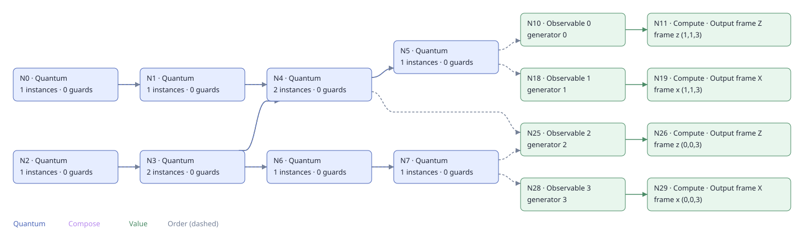
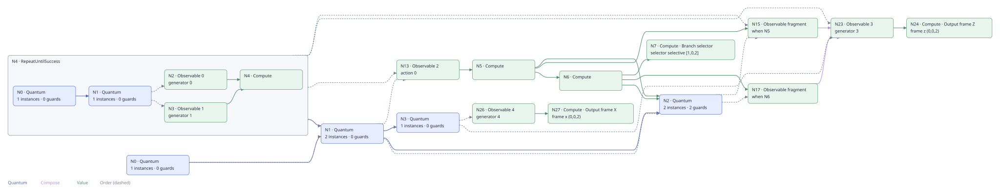

Quick Start¶
In this guide, we walk through compiling two simple logical computations:
a static logical CNOT and a dynamic logical T gate. Each step is shown in
Python, Rust, and the bloq CLI; pick whichever you installed in
Installation. Both examples load built-in gallery graphs, so
you do not need to write any source yet.
Static Logical CNOT¶
Load the gallery graph¶
The cnot gallery entry implements a logical CNOT with control and target input
and output ports. Load it and print its BLOG definition:
from pathlib import Path
import bloq
cnot = bloq.GalleryItem.CNOT.load()
print(cnot.to_text())
let cnot = GalleryItem::CNOT.build();
println!("{}", cnot.to_blog_text());
bloq gallery
bloq view --gallery cnot --html
The gallery command lists available entries; the viewer writes cnot.html.
The BLOG source is displayed below and can also be opened in the editor’s gallery.
BLOG 1.0
module main {
in control_in: data = 0
out control_out: data = 3
in target_in: data = 6
out target_out: data = 9
0: Port [0, 0, 0] <In_Control>
1: ZXZ [0, 0, 1]
2: ZXZ [0, 0, 2]
3: Port [0, 0, 3] <Out_Control>
4: ZXX [0, 1, 1]
5: ZXZ [0, 1, 2]
6: Port [1, 1, 0] <In_Target>
7: ZXZ [1, 1, 1]
8: ZXZ [1, 1, 2]
9: Port [1, 1, 3] <Out_Target>
0 -> +Z
1 -> +Z
1 -> +Y
2 -> +Z
4 -> +Z
5 -> +X
6 -> +Z
7 -> +Z
8 -> +Z
}
Compile to Bloq IR¶
We then compile the block graph into Bloq IR format.
cnot_program = bloq.compile(cnot, distance=3)
cnot_program.save("cnot.bloqir")
let cnot_program = compile(&cnot, 3)?;
std::fs::write("cnot.bloqir", cnot_program.to_text())?;
bloq compile --gallery cnot -d 3 --backend ir-text -o cnot.bloqir
Bloq IR is a graph-based representation of a physical quantum program. Quantum nodes place reusable circuit templates; classical nodes construct logical readouts, decode measurements, and compute control values. Quantum, value, and order edges describe their dependencies. The IR also retains detectors, logical boundary operators, dynamic regions, and source provenance.
The same program can be saved as human-readable text (.bloqir) or compact binary
(.bloq). See Inspect and exchange Bloq IR for its structure,
codecs, and inspection APIs. Here is the compiled CNOT in text form:
BLOQIR 1
metadata bloq_compile.code_distance u64 3
metadata bloq_compile.convention string fixed-bulk
logical-input (0,0,0) instance i2 x X(3,1)*X(3,3)*X(3,5) z Z(1,3)*Z(3,3)*Z(5,3)
logical-input (1,1,0) instance i0 x X(11,9)*X(11,11)*X(11,13) z Z(9,11)*Z(11,11)*Z(13,11)
logical-output (0,0,3) instance i9 x X(3,1)*X(3,3)*X(3,5) z Z(1,3)*Z(3,3)*Z(5,3)
logical-output (1,1,3) instance i7 x X(11,9)*X(11,11)*X(11,13) z Z(9,11)*Z(11,11)*Z(13,11)
template t0 {
circuit {
MPP X(3,1)*X(5,1):m0 Z(1,1)*Z(1,3):m1 X(1,1)*X(1,3)*X(3,1)*X(3,3):m2 Z(3,1)*Z(3,3)*Z(5,1)*Z(5,3):m3 Z(1,3)*Z(1,5)*Z(3,3)*Z(3,5):m4 X(3,3)*X(3,5)*X(5,3)*X(5,5):m5 Z(5,3)*Z(5,5):m6 X(1,5)*X(3,5):m7
}
flow _ -> X(3,1)*X(5,1) meas m0 center (4,0)
flow _ -> Z(1,1)*Z(1,3) meas m1 center (0,2)
flow _ -> X(1,1)*X(1,3)*X(3,1)*X(3,3) meas m2 center (2,2)
flow _ -> Z(3,1)*Z(3,3)*Z(5,1)*Z(5,3) meas m3 center (4,2)
flow _ -> Z(1,3)*Z(1,5)*Z(3,3)*Z(3,5) meas m4 center (2,4)
flow _ -> X(3,3)*X(3,5)*X(5,3)*X(5,5) meas m5 center (4,4)
flow _ -> Z(5,3)*Z(5,5) meas m6 center (6,4)
flow _ -> X(1,5)*X(3,5) meas m7 center (2,6)
}
template t1 {
circuit {
R (0,2) (4,2) (2,4) (6,4)
RX (4,0) (2,2) (4,4) (2,6)
TICK
CX (4,0) (3,1) (2,2) (1,3) (3,3) (4,2) (1,5) (2,4) (4,4) (3,5) (5,5) (6,4)
TICK
CX (4,0) (5,1) (2,2) (3,3) (3,1) (4,2) (1,3) (2,4) (4,4) (5,5) (5,3) (6,4)
TICK
CX (1,3) (0,2) (2,2) (1,1) (5,3) (4,2) (3,5) (2,4) (4,4) (3,3) (2,6) (1,5)
TICK
CX (1,1) (0,2) (2,2) (3,1) (5,1) (4,2) (3,3) (2,4) (4,4) (5,3) (2,6) (3,5)
TICK
M (0,2):m0 (4,2):m1 (2,4):m2 (6,4):m3
MX (4,0):m4 (2,2):m5 (4,4):m6 (2,6):m7
TICK
R (0,2) (4,2) (2,4) (6,4)
RX (4,0) (2,2) (4,4) (2,6)
TICK
CX (4,0) (3,1) (2,2) (1,3) (3,3) (4,2) (1,5) (2,4) (4,4) (3,5) (5,5) (6,4)
TICK
CX (4,0) (5,1) (2,2) (3,3) (3,1) (4,2) (1,3) (2,4) (4,4) (5,5) (5,3) (6,4)
TICK
CX (1,3) (0,2) (2,2) (1,1) (5,3) (4,2) (3,5) (2,4) (4,4) (3,3) (2,6) (1,5)
TICK
CX (1,1) (0,2) (2,2) (3,1) (5,1) (4,2) (3,3) (2,4) (4,4) (5,3) (2,6) (3,5)
TICK
M (0,2):m8 (4,2):m9 (2,4):m10 (6,4):m11
MX (4,0):m12 (2,2):m13 (4,4):m14 (2,6):m15
TICK
R (0,2) (4,2) (2,4) (6,4)
RX (4,0) (2,2) (4,4) (2,6)
TICK
CX (4,0) (3,1) (2,2) (1,3) (3,3) (4,2) (1,5) (2,4) (4,4) (3,5) (5,5) (6,4)
TICK
CX (4,0) (5,1) (2,2) (3,3) (3,1) (4,2) (1,3) (2,4) (4,4) (5,5) (5,3) (6,4)
TICK
CX (1,3) (0,2) (2,2) (1,1) (5,3) (4,2) (3,5) (2,4) (4,4) (3,3) (2,6) (1,5)
TICK
CX (1,1) (0,2) (2,2) (3,1) (5,1) (4,2) (3,3) (2,4) (4,4) (5,3) (2,6) (3,5)
TICK
M (0,2):m16 (4,2):m17 (2,4):m18 (6,4):m19
MX (4,0):m20 (2,2):m21 (4,4):m22 (2,6):m23
}
detector m4*m12 @ (4,0)
detector m0*m8 @ (0,2)
detector m5*m13 @ (2,2)
detector m1*m9 @ (4,2)
detector m2*m10 @ (2,4)
detector m6*m14 @ (4,4)
detector m3*m11 @ (6,4)
detector m7*m15 @ (2,6)
detector m12*m20 @ (4,0)
detector m8*m16 @ (0,2)
detector m13*m21 @ (2,2)
detector m9*m17 @ (4,2)
detector m10*m18 @ (2,4)
detector m14*m22 @ (4,4)
detector m11*m19 @ (6,4)
detector m15*m23 @ (2,6)
flow Z(1,1)*Z(1,3) -> _ meas m0 center (0,2)
flow Z(3,1)*Z(3,3)*Z(5,1)*Z(5,3) -> _ meas m1 center (4,2)
flow Z(1,3)*Z(1,5)*Z(3,3)*Z(3,5) -> _ meas m2 center (2,4)
flow Z(5,3)*Z(5,5) -> _ meas m3 center (6,4)
flow X(3,1)*X(5,1) -> _ meas m4 center (4,0)
flow X(1,1)*X(1,3)*X(3,1)*X(3,3) -> _ meas m5 center (2,2)
flow X(3,3)*X(3,5)*X(5,3)*X(5,5) -> _ meas m6 center (4,4)
flow X(1,5)*X(3,5) -> _ meas m7 center (2,6)
flow _ -> Z(1,1)*Z(1,3) meas m16 center (0,2)
flow _ -> Z(3,1)*Z(3,3)*Z(5,1)*Z(5,3) meas m17 center (4,2)
flow _ -> Z(1,3)*Z(1,5)*Z(3,3)*Z(3,5) meas m18 center (2,4)
flow _ -> Z(5,3)*Z(5,5) meas m19 center (6,4)
flow _ -> X(3,1)*X(5,1) meas m20 center (4,0)
flow _ -> X(1,1)*X(1,3)*X(3,1)*X(3,3) meas m21 center (2,2)
flow _ -> X(3,3)*X(3,5)*X(5,3)*X(5,5) meas m22 center (4,4)
flow _ -> X(1,5)*X(3,5) meas m23 center (2,6)
}
template t2 {
circuit {
R (0,2) (4,2) (2,4) (6,4) (0,6) (4,6)
RX (4,0) (2,2) (4,4) (2,6)
RX (1,7) (3,7) (5,7)
TICK
CX (4,0) (3,1) (2,2) (1,3) (3,3) (4,2) (1,5) (2,4) (4,4) (3,5) (5,5) (6,4) (2,6) (1,7) (3,7) (4,6)
TICK
CX (4,0) (5,1) (2,2) (3,3) (3,1) (4,2) (1,3) (2,4) (4,4) (5,5) (5,3) (6,4) (2,6) (3,7) (3,5) (4,6)
TICK
CX (1,3) (0,2) (2,2) (1,1) (5,3) (4,2) (3,5) (2,4) (4,4) (3,3) (1,7) (0,6) (2,6) (1,5) (5,7) (4,6)
TICK
CX (1,1) (0,2) (2,2) (3,1) (5,1) (4,2) (3,3) (2,4) (4,4) (5,3) (1,5) (0,6) (2,6) (3,5) (5,5) (4,6)
TICK
M (0,2):m0 (4,2):m1 (2,4):m2 (6,4):m3 (0,6):m4 (4,6):m5
MX (4,0):m6 (2,2):m7 (4,4):m8 (2,6):m9
TICK
R (0,2) (4,2) (2,4) (6,4) (0,6) (4,6)
RX (4,0) (2,2) (4,4) (2,6)
TICK
CX (4,0) (3,1) (2,2) (1,3) (3,3) (4,2) (1,5) (2,4) (4,4) (3,5) (5,5) (6,4) (2,6) (1,7) (3,7) (4,6)
TICK
CX (4,0) (5,1) (2,2) (3,3) (3,1) (4,2) (1,3) (2,4) (4,4) (5,5) (5,3) (6,4) (2,6) (3,7) (3,5) (4,6)
TICK
CX (1,3) (0,2) (2,2) (1,1) (5,3) (4,2) (3,5) (2,4) (4,4) (3,3) (1,7) (0,6) (2,6) (1,5) (5,7) (4,6)
TICK
CX (1,1) (0,2) (2,2) (3,1) (5,1) (4,2) (3,3) (2,4) (4,4) (5,3) (1,5) (0,6) (2,6) (3,5) (5,5) (4,6)
TICK
M (0,2):m10 (4,2):m11 (2,4):m12 (6,4):m13 (0,6):m14 (4,6):m15
MX (4,0):m16 (2,2):m17 (4,4):m18 (2,6):m19
TICK
R (0,2) (4,2) (2,4) (6,4) (0,6) (4,6)
RX (4,0) (2,2) (4,4) (2,6)
TICK
CX (4,0) (3,1) (2,2) (1,3) (3,3) (4,2) (1,5) (2,4) (4,4) (3,5) (5,5) (6,4) (2,6) (1,7) (3,7) (4,6)
TICK
CX (4,0) (5,1) (2,2) (3,3) (3,1) (4,2) (1,3) (2,4) (4,4) (5,5) (5,3) (6,4) (2,6) (3,7) (3,5) (4,6)
TICK
CX (1,3) (0,2) (2,2) (1,1) (5,3) (4,2) (3,5) (2,4) (4,4) (3,3) (1,7) (0,6) (2,6) (1,5) (5,7) (4,6)
TICK
CX (1,1) (0,2) (2,2) (3,1) (5,1) (4,2) (3,3) (2,4) (4,4) (5,3) (1,5) (0,6) (2,6) (3,5) (5,5) (4,6)
TICK
M (0,2):m20 (4,2):m21 (2,4):m22 (6,4):m23 (0,6):m24 (4,6):m25
MX (4,0):m26 (2,2):m27 (4,4):m28 (2,6):m29
MX (1,7):m30 (3,7):m31 (5,7):m32
}
detector m6*m16 @ (4,0)
detector m0*m10 @ (0,2)
detector m7*m17 @ (2,2)
detector m1*m11 @ (4,2)
detector m2*m12 @ (2,4)
detector m8*m18 @ (4,4)
detector m3*m13 @ (6,4)
detector m4*m14 @ (0,6)
detector m9*m19 @ (2,6)
detector m5*m15 @ (4,6)
detector m16*m26 @ (4,0)
detector m10*m20 @ (0,2)
detector m17*m27 @ (2,2)
detector m11*m21 @ (4,2)
detector m12*m22 @ (2,4)
detector m18*m28 @ (4,4)
detector m13*m23 @ (6,4)
detector m14*m24 @ (0,6)
detector m19*m29 @ (2,6)
detector m15*m25 @ (4,6)
flow Z(1,1)*Z(1,3) -> _ meas m0 center (0,2)
flow Z(3,1)*Z(3,3)*Z(5,1)*Z(5,3) -> _ meas m1 center (4,2)
flow Z(1,3)*Z(1,5)*Z(3,3)*Z(3,5) -> _ meas m2 center (2,4)
flow Z(5,3)*Z(5,5) -> _ meas m3 center (6,4)
flow X(3,1)*X(5,1) -> _ meas m6 center (4,0)
flow X(1,1)*X(1,3)*X(3,1)*X(3,3) -> _ meas m7 center (2,2)
flow X(3,3)*X(3,5)*X(5,3)*X(5,5) -> _ meas m8 center (4,4)
flow X(1,5)*X(3,5) -> _ meas m9 center (2,6)
flow _ -> Z(1,1)*Z(1,3) meas m20 center (0,2)
flow _ -> Z(3,1)*Z(3,3)*Z(5,1)*Z(5,3) meas m21 center (4,2)
flow _ -> Z(1,3)*Z(1,5)*Z(3,3)*Z(3,5) meas m22 center (2,4)
flow _ -> Z(5,3)*Z(5,5) meas m23 center (6,4)
flow _ -> X(3,1)*X(5,1) meas m26 center (4,0)
flow _ -> X(1,1)*X(1,3)*X(3,1)*X(3,3) meas m27 center (2,2)
flow _ -> X(3,3)*X(3,5)*X(5,3)*X(5,5) meas m28 center (4,4)
flow _ -> X(1,5)*X(3,5) meas m30*m31*m29 center (2,6)
}
template t3 {
circuit {
R (2,0) (6,0) (0,2) (4,2) (2,4) (6,4)
RX (4,0) (2,2) (4,4) (2,6)
RX (1,-1) (3,-1) (5,-1) (1,1) (3,1) (5,1) (1,3) (3,3) (5,3) (1,5) (3,5) (5,5)
TICK
CX (1,1) (2,0) (4,0) (3,1) (5,1) (6,0) (2,2) (1,3) (3,3) (4,2) (1,5) (2,4) (4,4) (3,5) (5,5) (6,4)
TICK
CX (1,-1) (2,0) (4,0) (5,1) (5,-1) (6,0) (2,2) (3,3) (3,1) (4,2) (1,3) (2,4) (4,4) (5,5) (5,3) (6,4)
TICK
CX (3,1) (2,0) (4,0) (3,-1) (1,3) (0,2) (2,2) (1,1) (5,3) (4,2) (3,5) (2,4) (4,4) (3,3) (2,6) (1,5)
TICK
CX (3,-1) (2,0) (4,0) (5,-1) (1,1) (0,2) (2,2) (3,1) (5,1) (4,2) (3,3) (2,4) (4,4) (5,3) (2,6) (3,5)
TICK
M (2,0):m0 (6,0):m1 (0,2):m2 (4,2):m3 (2,4):m4 (6,4):m5
MX (4,0):m6 (2,2):m7 (4,4):m8 (2,6):m9
TICK
R (2,0) (6,0) (0,2) (4,2) (2,4) (6,4)
RX (4,0) (2,2) (4,4) (2,6)
TICK
CX (1,1) (2,0) (4,0) (3,1) (5,1) (6,0) (2,2) (1,3) (3,3) (4,2) (1,5) (2,4) (4,4) (3,5) (5,5) (6,4)
TICK
CX (1,-1) (2,0) (4,0) (5,1) (5,-1) (6,0) (2,2) (3,3) (3,1) (4,2) (1,3) (2,4) (4,4) (5,5) (5,3) (6,4)
TICK
CX (3,1) (2,0) (4,0) (3,-1) (1,3) (0,2) (2,2) (1,1) (5,3) (4,2) (3,5) (2,4) (4,4) (3,3) (2,6) (1,5)
TICK
CX (3,-1) (2,0) (4,0) (5,-1) (1,1) (0,2) (2,2) (3,1) (5,1) (4,2) (3,3) (2,4) (4,4) (5,3) (2,6) (3,5)
TICK
M (2,0):m10 (6,0):m11 (0,2):m12 (4,2):m13 (2,4):m14 (6,4):m15
MX (4,0):m16 (2,2):m17 (4,4):m18 (2,6):m19
TICK
R (2,0) (6,0) (0,2) (4,2) (2,4) (6,4)
RX (4,0) (2,2) (4,4) (2,6)
TICK
CX (1,1) (2,0) (4,0) (3,1) (5,1) (6,0) (2,2) (1,3) (3,3) (4,2) (1,5) (2,4) (4,4) (3,5) (5,5) (6,4)
TICK
CX (1,-1) (2,0) (4,0) (5,1) (5,-1) (6,0) (2,2) (3,3) (3,1) (4,2) (1,3) (2,4) (4,4) (5,5) (5,3) (6,4)
TICK
CX (3,1) (2,0) (4,0) (3,-1) (1,3) (0,2) (2,2) (1,1) (5,3) (4,2) (3,5) (2,4) (4,4) (3,3) (2,6) (1,5)
TICK
CX (3,-1) (2,0) (4,0) (5,-1) (1,1) (0,2) (2,2) (3,1) (5,1) (4,2) (3,3) (2,4) (4,4) (5,3) (2,6) (3,5)
TICK
M (2,0):m20 (6,0):m21 (0,2):m22 (4,2):m23 (2,4):m24 (6,4):m25
MX (4,0):m26 (2,2):m27 (4,4):m28 (2,6):m29
MX (1,-1):m30 (3,-1):m31 (5,-1):m32
}
detector m6 @ (4,0)
detector m7 @ (2,2)
detector m8 @ (4,4)
detector m9 @ (2,6)
detector m0*m10 @ (2,0)
detector m6*m16 @ (4,0)
detector m1*m11 @ (6,0)
detector m2*m12 @ (0,2)
detector m7*m17 @ (2,2)
detector m3*m13 @ (4,2)
detector m4*m14 @ (2,4)
detector m8*m18 @ (4,4)
detector m5*m15 @ (6,4)
detector m9*m19 @ (2,6)
detector m10*m20 @ (2,0)
detector m16*m26 @ (4,0)
detector m11*m21 @ (6,0)
detector m12*m22 @ (0,2)
detector m17*m27 @ (2,2)
detector m13*m23 @ (4,2)
detector m14*m24 @ (2,4)
detector m18*m28 @ (4,4)
detector m15*m25 @ (6,4)
detector m19*m29 @ (2,6)
flow _ -> Z(1,1)*Z(1,3) meas m22 center (0,2)
flow _ -> Z(3,1)*Z(3,3)*Z(5,1)*Z(5,3) meas m23 center (4,2)
flow _ -> Z(1,3)*Z(1,5)*Z(3,3)*Z(3,5) meas m24 center (2,4)
flow _ -> Z(5,3)*Z(5,5) meas m25 center (6,4)
flow _ -> X(1,1)*X(1,3)*X(3,1)*X(3,3) meas m27 center (2,2)
flow _ -> X(3,3)*X(3,5)*X(5,3)*X(5,5) meas m28 center (4,4)
flow _ -> X(1,5)*X(3,5) meas m29 center (2,6)
flow _ -> X(3,1)*X(5,1) meas m31*m32*m26 center (4,0)
}
template t4 {
circuit {
R (0,2) (4,2) (2,4) (6,4)
RX (4,0) (2,2) (6,2) (4,4) (2,6) (6,6)
R (7,1) (7,3) (7,5)
TICK
CX (4,0) (3,1) (2,2) (1,3) (3,3) (4,2) (6,2) (5,3) (1,5) (2,4) (4,4) (3,5) (5,5) (6,4)
TICK
CX (4,0) (5,1) (2,2) (3,3) (3,1) (4,2) (6,2) (7,3) (1,3) (2,4) (4,4) (5,5) (5,3) (6,4)
TICK
CX (1,3) (0,2) (2,2) (1,1) (5,3) (4,2) (6,2) (5,1) (3,5) (2,4) (4,4) (3,3) (7,5) (6,4) (2,6) (1,5) (6,6) (5,5)
TICK
CX (1,1) (0,2) (2,2) (3,1) (5,1) (4,2) (6,2) (7,1) (3,3) (2,4) (4,4) (5,3) (7,3) (6,4) (2,6) (3,5) (6,6) (7,5)
TICK
M (0,2):m0 (4,2):m1 (2,4):m2 (6,4):m3
MX (4,0):m4 (2,2):m5 (6,2):m6 (4,4):m7 (2,6):m8 (6,6):m9
TICK
R (0,2) (4,2) (2,4) (6,4)
RX (4,0) (2,2) (6,2) (4,4) (2,6) (6,6)
TICK
CX (4,0) (3,1) (2,2) (1,3) (3,3) (4,2) (6,2) (5,3) (1,5) (2,4) (4,4) (3,5) (5,5) (6,4)
TICK
CX (4,0) (5,1) (2,2) (3,3) (3,1) (4,2) (6,2) (7,3) (1,3) (2,4) (4,4) (5,5) (5,3) (6,4)
TICK
CX (1,3) (0,2) (2,2) (1,1) (5,3) (4,2) (6,2) (5,1) (3,5) (2,4) (4,4) (3,3) (7,5) (6,4) (2,6) (1,5) (6,6) (5,5)
TICK
CX (1,1) (0,2) (2,2) (3,1) (5,1) (4,2) (6,2) (7,1) (3,3) (2,4) (4,4) (5,3) (7,3) (6,4) (2,6) (3,5) (6,6) (7,5)
TICK
M (0,2):m10 (4,2):m11 (2,4):m12 (6,4):m13
MX (4,0):m14 (2,2):m15 (6,2):m16 (4,4):m17 (2,6):m18 (6,6):m19
TICK
R (0,2) (4,2) (2,4) (6,4)
RX (4,0) (2,2) (6,2) (4,4) (2,6) (6,6)
TICK
CX (4,0) (3,1) (2,2) (1,3) (3,3) (4,2) (6,2) (5,3) (1,5) (2,4) (4,4) (3,5) (5,5) (6,4)
TICK
CX (4,0) (5,1) (2,2) (3,3) (3,1) (4,2) (6,2) (7,3) (1,3) (2,4) (4,4) (5,5) (5,3) (6,4)
TICK
CX (1,3) (0,2) (2,2) (1,1) (5,3) (4,2) (6,2) (5,1) (3,5) (2,4) (4,4) (3,3) (7,5) (6,4) (2,6) (1,5) (6,6) (5,5)
TICK
CX (1,1) (0,2) (2,2) (3,1) (5,1) (4,2) (6,2) (7,1) (3,3) (2,4) (4,4) (5,3) (7,3) (6,4) (2,6) (3,5) (6,6) (7,5)
TICK
M (0,2):m20 (4,2):m21 (2,4):m22 (6,4):m23
MX (4,0):m24 (2,2):m25 (6,2):m26 (4,4):m27 (2,6):m28 (6,6):m29
M (1,1):m30 (3,1):m31 (5,1):m32 (7,1):m33 (1,3):m34 (3,3):m35 (5,3):m36 (7,3):m37 (1,5):m38 (3,5):m39 (5,5):m40 (7,5):m41
}
detector m4*m14 @ (4,0)
detector m0*m10 @ (0,2)
detector m5*m15 @ (2,2)
detector m1*m11 @ (4,2)
detector m6*m16 @ (6,2)
detector m2*m12 @ (2,4)
detector m7*m17 @ (4,4)
detector m3*m13 @ (6,4)
detector m8*m18 @ (2,6)
detector m9*m19 @ (6,6)
detector m14*m24 @ (4,0)
detector m10*m20 @ (0,2)
detector m15*m25 @ (2,2)
detector m11*m21 @ (4,2)
detector m16*m26 @ (6,2)
detector m12*m22 @ (2,4)
detector m17*m27 @ (4,4)
detector m13*m23 @ (6,4)
detector m18*m28 @ (2,6)
detector m19*m29 @ (6,6)
detector m20*m30*m34 @ (0,2)
detector m21*m31*m32*m35*m36 @ (4,2)
detector m22*m34*m35*m38*m39 @ (2,4)
detector m23*m36*m37*m40*m41 @ (6,4)
flow Z(1,1)*Z(1,3) -> _ meas m0 center (0,2)
flow Z(3,1)*Z(3,3)*Z(5,1)*Z(5,3) -> _ meas m1 center (4,2)
flow Z(1,3)*Z(1,5)*Z(3,3)*Z(3,5) -> _ meas m2 center (2,4)
flow Z(5,3)*Z(5,5) -> _ meas m3 center (6,4)
flow X(3,1)*X(5,1) -> _ meas m4 center (4,0)
flow X(1,1)*X(1,3)*X(3,1)*X(3,3) -> _ meas m5 center (2,2)
flow X(3,3)*X(3,5)*X(5,3)*X(5,5) -> _ meas m7 center (4,4)
flow X(1,5)*X(3,5) -> _ meas m8 center (2,6)
}
template t5 {
circuit {
R (0,2) (4,2) (2,4) (6,4)
RX (0,0) (4,0) (2,2) (0,4) (4,4) (2,6)
R (-1,1) (-1,3) (-1,5)
TICK
CX (0,0) (-1,1) (4,0) (3,1) (-1,3) (0,2) (2,2) (1,3) (3,3) (4,2) (0,4) (-1,5) (1,5) (2,4) (4,4) (3,5) (5,5) (6,4)
TICK
CX (0,0) (1,1) (4,0) (5,1) (-1,1) (0,2) (2,2) (3,3) (3,1) (4,2) (0,4) (1,5) (1,3) (2,4) (4,4) (5,5) (5,3) (6,4)
TICK
CX (1,3) (0,2) (2,2) (1,1) (5,3) (4,2) (0,4) (-1,3) (3,5) (2,4) (4,4) (3,3) (2,6) (1,5)
TICK
CX (1,1) (0,2) (2,2) (3,1) (5,1) (4,2) (0,4) (1,3) (3,3) (2,4) (4,4) (5,3) (2,6) (3,5)
TICK
M (0,2):m0 (4,2):m1 (2,4):m2 (6,4):m3
MX (0,0):m4 (4,0):m5 (2,2):m6 (0,4):m7 (4,4):m8 (2,6):m9
TICK
R (0,2) (4,2) (2,4) (6,4)
RX (0,0) (4,0) (2,2) (0,4) (4,4) (2,6)
TICK
CX (0,0) (-1,1) (4,0) (3,1) (-1,3) (0,2) (2,2) (1,3) (3,3) (4,2) (0,4) (-1,5) (1,5) (2,4) (4,4) (3,5) (5,5) (6,4)
TICK
CX (0,0) (1,1) (4,0) (5,1) (-1,1) (0,2) (2,2) (3,3) (3,1) (4,2) (0,4) (1,5) (1,3) (2,4) (4,4) (5,5) (5,3) (6,4)
TICK
CX (1,3) (0,2) (2,2) (1,1) (5,3) (4,2) (0,4) (-1,3) (3,5) (2,4) (4,4) (3,3) (2,6) (1,5)
TICK
CX (1,1) (0,2) (2,2) (3,1) (5,1) (4,2) (0,4) (1,3) (3,3) (2,4) (4,4) (5,3) (2,6) (3,5)
TICK
M (0,2):m10 (4,2):m11 (2,4):m12 (6,4):m13
MX (0,0):m14 (4,0):m15 (2,2):m16 (0,4):m17 (4,4):m18 (2,6):m19
TICK
R (0,2) (4,2) (2,4) (6,4)
RX (0,0) (4,0) (2,2) (0,4) (4,4) (2,6)
TICK
CX (0,0) (-1,1) (4,0) (3,1) (-1,3) (0,2) (2,2) (1,3) (3,3) (4,2) (0,4) (-1,5) (1,5) (2,4) (4,4) (3,5) (5,5) (6,4)
TICK
CX (0,0) (1,1) (4,0) (5,1) (-1,1) (0,2) (2,2) (3,3) (3,1) (4,2) (0,4) (1,5) (1,3) (2,4) (4,4) (5,5) (5,3) (6,4)
TICK
CX (1,3) (0,2) (2,2) (1,1) (5,3) (4,2) (0,4) (-1,3) (3,5) (2,4) (4,4) (3,3) (2,6) (1,5)
TICK
CX (1,1) (0,2) (2,2) (3,1) (5,1) (4,2) (0,4) (1,3) (3,3) (2,4) (4,4) (5,3) (2,6) (3,5)
TICK
M (0,2):m20 (4,2):m21 (2,4):m22 (6,4):m23
MX (0,0):m24 (4,0):m25 (2,2):m26 (0,4):m27 (4,4):m28 (2,6):m29
M (-1,1):m30 (-1,3):m31 (-1,5):m32
}
detector m4*m14 @ (0,0)
detector m5*m15 @ (4,0)
detector m0*m10 @ (0,2)
detector m6*m16 @ (2,2)
detector m1*m11 @ (4,2)
detector m7*m17 @ (0,4)
detector m2*m12 @ (2,4)
detector m8*m18 @ (4,4)
detector m3*m13 @ (6,4)
detector m9*m19 @ (2,6)
detector m14*m24 @ (0,0)
detector m15*m25 @ (4,0)
detector m10*m20 @ (0,2)
detector m16*m26 @ (2,2)
detector m11*m21 @ (4,2)
detector m17*m27 @ (0,4)
detector m12*m22 @ (2,4)
detector m18*m28 @ (4,4)
detector m13*m23 @ (6,4)
detector m19*m29 @ (2,6)
flow Z(1,1)*Z(1,3) -> _ meas m0 center (0,2)
flow Z(3,1)*Z(3,3)*Z(5,1)*Z(5,3) -> _ meas m1 center (4,2)
flow Z(1,3)*Z(1,5)*Z(3,3)*Z(3,5) -> _ meas m2 center (2,4)
flow Z(5,3)*Z(5,5) -> _ meas m3 center (6,4)
flow X(3,1)*X(5,1) -> _ meas m5 center (4,0)
flow X(1,1)*X(1,3)*X(3,1)*X(3,3) -> _ meas m6 center (2,2)
flow X(3,3)*X(3,5)*X(5,3)*X(5,5) -> _ meas m8 center (4,4)
flow X(1,5)*X(3,5) -> _ meas m9 center (2,6)
flow _ -> Z(3,1)*Z(3,3)*Z(5,1)*Z(5,3) meas m21 center (4,2)
flow _ -> Z(1,3)*Z(1,5)*Z(3,3)*Z(3,5) meas m22 center (2,4)
flow _ -> Z(5,3)*Z(5,5) meas m23 center (6,4)
flow _ -> X(3,1)*X(5,1) meas m25 center (4,0)
flow _ -> X(1,1)*X(1,3)*X(3,1)*X(3,3) meas m26 center (2,2)
flow _ -> X(3,3)*X(3,5)*X(5,3)*X(5,5) meas m28 center (4,4)
flow _ -> X(1,5)*X(3,5) meas m29 center (2,6)
flow _ -> Z(1,1)*Z(1,3) meas m30*m31*m20 center (0,2)
}
template t6 {
circuit {
MPP X(3,1)*X(5,1):m0 Z(1,1)*Z(1,3):m1 X(1,1)*X(1,3)*X(3,1)*X(3,3):m2 Z(3,1)*Z(3,3)*Z(5,1)*Z(5,3):m3 Z(1,3)*Z(1,5)*Z(3,3)*Z(3,5):m4 X(3,3)*X(3,5)*X(5,3)*X(5,5):m5 Z(5,3)*Z(5,5):m6 X(1,5)*X(3,5):m7
}
flow X(3,1)*X(5,1) -> _ meas m0 center (4,0)
flow Z(1,1)*Z(1,3) -> _ meas m1 center (0,2)
flow X(1,1)*X(1,3)*X(3,1)*X(3,3) -> _ meas m2 center (2,2)
flow Z(3,1)*Z(3,3)*Z(5,1)*Z(5,3) -> _ meas m3 center (4,2)
flow Z(1,3)*Z(1,5)*Z(3,3)*Z(3,5) -> _ meas m4 center (2,4)
flow X(3,3)*X(3,5)*X(5,3)*X(5,5) -> _ meas m5 center (4,4)
flow Z(5,3)*Z(5,5) -> _ meas m6 center (6,4)
flow X(1,5)*X(3,5) -> _ meas m7 center (2,6)
}
template t7 {
circuit {
R (0,2) (4,2) (2,4) (6,4)
RX (4,0) (2,2) (4,4) (2,6)
TICK
CX (4,0) (3,1) (2,2) (1,3) (3,3) (4,2) (1,5) (2,4) (4,4) (3,5) (5,5) (6,4)
TICK
CX (4,0) (5,1) (2,2) (3,3) (3,1) (4,2) (1,3) (2,4) (4,4) (5,5) (5,3) (6,4)
TICK
CX (1,3) (0,2) (2,2) (1,1) (5,3) (4,2) (3,5) (2,4) (4,4) (3,3) (2,6) (1,5)
TICK
CX (1,1) (0,2) (2,2) (3,1) (5,1) (4,2) (3,3) (2,4) (4,4) (5,3) (2,6) (3,5)
TICK
M (0,2):m0 (4,2):m1 (2,4):m2 (6,4):m3
MX (4,0):m4 (2,2):m5 (4,4):m6 (2,6):m7
}
flow _ -> Z(1,1)*Z(1,3) meas m0 center (0,2)
flow Z(1,1)*Z(1,3) -> _ meas m0 center (0,2)
flow _ -> Z(3,1)*Z(3,3)*Z(5,1)*Z(5,3) meas m1 center (4,2)
flow Z(3,1)*Z(3,3)*Z(5,1)*Z(5,3) -> _ meas m1 center (4,2)
flow _ -> Z(1,3)*Z(1,5)*Z(3,3)*Z(3,5) meas m2 center (2,4)
flow Z(1,3)*Z(1,5)*Z(3,3)*Z(3,5) -> _ meas m2 center (2,4)
flow _ -> Z(5,3)*Z(5,5) meas m3 center (6,4)
flow Z(5,3)*Z(5,5) -> _ meas m3 center (6,4)
flow _ -> X(3,1)*X(5,1) meas m4 center (4,0)
flow X(3,1)*X(5,1) -> _ meas m4 center (4,0)
flow _ -> X(1,1)*X(1,3)*X(3,1)*X(3,3) meas m5 center (2,2)
flow X(1,1)*X(1,3)*X(3,1)*X(3,3) -> _ meas m5 center (2,2)
flow _ -> X(3,3)*X(3,5)*X(5,3)*X(5,5) meas m6 center (4,4)
flow X(3,3)*X(3,5)*X(5,3)*X(5,5) -> _ meas m6 center (4,4)
flow _ -> X(1,5)*X(3,5) meas m7 center (2,6)
flow X(1,5)*X(3,5) -> _ meas m7 center (2,6)
}
template t8 {
circuit {
R (0,2) (4,2) (2,4) (6,4)
RX (4,0) (2,2) (4,4) (2,6)
TICK
CX (4,0) (3,1) (2,2) (1,3) (3,3) (4,2) (1,5) (2,4) (4,4) (3,5) (5,5) (6,4)
TICK
CX (4,0) (5,1) (2,2) (3,3) (3,1) (4,2) (1,3) (2,4) (4,4) (5,5) (5,3) (6,4)
TICK
CX (1,3) (0,2) (2,2) (1,1) (5,3) (4,2) (3,5) (2,4) (4,4) (3,3) (2,6) (1,5)
TICK
CX (1,1) (0,2) (2,2) (3,1) (5,1) (4,2) (3,3) (2,4) (4,4) (5,3) (2,6) (3,5)
TICK
M (0,2):m0 (4,2):m1 (2,4):m2 (6,4):m3
MX (4,0):m4 (2,2):m5 (4,4):m6 (2,6):m7
TICK
REPEAT 2 b1
}
body b1 {
R (0,2) (4,2) (2,4) (6,4)
RX (4,0) (2,2) (4,4) (2,6)
TICK
CX (4,0) (3,1) (2,2) (1,3) (3,3) (4,2) (1,5) (2,4) (4,4) (3,5) (5,5) (6,4)
TICK
CX (4,0) (5,1) (2,2) (3,3) (3,1) (4,2) (1,3) (2,4) (4,4) (5,5) (5,3) (6,4)
TICK
CX (1,3) (0,2) (2,2) (1,1) (5,3) (4,2) (3,5) (2,4) (4,4) (3,3) (2,6) (1,5)
TICK
CX (1,1) (0,2) (2,2) (3,1) (5,1) (4,2) (3,3) (2,4) (4,4) (5,3) (2,6) (3,5)
TICK
M (0,2):m8 (4,2):m9 (2,4):m10 (6,4):m11
MX (4,0):m12 (2,2):m13 (4,4):m14 (2,6):m15
TICK
}
detector body(b1) m8*s0 @ (0,2)
detector body(b1) m9*s1 @ (4,2)
detector body(b1) m10*s2 @ (2,4)
detector body(b1) m11*s3 @ (6,4)
detector body(b1) m12*s4 @ (4,0)
detector body(b1) m13*s5 @ (2,2)
detector body(b1) m14*s6 @ (4,4)
detector body(b1) m15*s7 @ (2,6)
loop(b1,s0) init m0 next m8
loop(b1,s1) init m1 next m9
loop(b1,s2) init m2 next m10
loop(b1,s3) init m3 next m11
loop(b1,s4) init m4 next m12
loop(b1,s5) init m5 next m13
loop(b1,s6) init m6 next m14
loop(b1,s7) init m7 next m15
flow Z(1,1)*Z(1,3) -> _ meas m0 center (0,2)
flow Z(3,1)*Z(3,3)*Z(5,1)*Z(5,3) -> _ meas m1 center (4,2)
flow Z(1,3)*Z(1,5)*Z(3,3)*Z(3,5) -> _ meas m2 center (2,4)
flow Z(5,3)*Z(5,5) -> _ meas m3 center (6,4)
flow X(3,1)*X(5,1) -> _ meas m4 center (4,0)
flow X(1,1)*X(1,3)*X(3,1)*X(3,3) -> _ meas m5 center (2,2)
flow X(3,3)*X(3,5)*X(5,3)*X(5,5) -> _ meas m6 center (4,4)
flow X(1,5)*X(3,5) -> _ meas m7 center (2,6)
flow _ -> Z(1,1)*Z(1,3) meas m8 center (0,2)
flow _ -> Z(3,1)*Z(3,3)*Z(5,1)*Z(5,3) meas m9 center (4,2)
flow _ -> Z(1,3)*Z(1,5)*Z(3,3)*Z(3,5) meas m10 center (2,4)
flow _ -> Z(5,3)*Z(5,5) meas m11 center (6,4)
flow _ -> X(3,1)*X(5,1) meas m12 center (4,0)
flow _ -> X(1,1)*X(1,3)*X(3,1)*X(3,3) meas m13 center (2,2)
flow _ -> X(3,3)*X(3,5)*X(5,3)*X(5,5) meas m14 center (4,4)
flow _ -> X(1,5)*X(3,5) meas m15 center (2,6)
}
bundle b0 owners t0 t1 {
detector o0:m1*o1:m0 @ (0,2)
detector o0:m3*o1:m1 @ (4,2)
detector o0:m4*o1:m2 @ (2,4)
detector o0:m6*o1:m3 @ (6,4)
detector o0:m0*o1:m4 @ (4,0)
detector o0:m2*o1:m5 @ (2,2)
detector o0:m5*o1:m6 @ (4,4)
detector o0:m7*o1:m7 @ (2,6)
}
bundle b1 owners t0 t2 {
detector o0:m1*o1:m0 @ (0,2)
detector o0:m3*o1:m1 @ (4,2)
detector o0:m4*o1:m2 @ (2,4)
detector o0:m6*o1:m3 @ (6,4)
detector o0:m0*o1:m6 @ (4,0)
detector o0:m2*o1:m7 @ (2,2)
detector o0:m5*o1:m8 @ (4,4)
detector o0:m7*o1:m9 @ (2,6)
}
bundle b2 owners t3 t4 {
detector o0:m22*o1:m0 @ (0,2)
detector o0:m23*o1:m1 @ (4,2)
detector o0:m24*o1:m2 @ (2,4)
detector o0:m25*o1:m3 @ (6,4)
detector o0:m26*o0:m31*o0:m32*o1:m4 @ (4,0)
detector o0:m27*o1:m5 @ (2,2)
detector o0:m28*o1:m7 @ (4,4)
detector o0:m29*o1:m8 @ (2,6)
}
bundle b3 owners t1 t5 {
detector o0:m16*o1:m0 @ (0,2)
detector o0:m17*o1:m1 @ (4,2)
detector o0:m18*o1:m2 @ (2,4)
detector o0:m19*o1:m3 @ (6,4)
detector o0:m20*o1:m5 @ (4,0)
detector o0:m21*o1:m6 @ (2,2)
detector o0:m22*o1:m8 @ (4,4)
detector o0:m23*o1:m9 @ (2,6)
}
bundle b4 owners t2 t1 {
detector o0:m20*o1:m0 @ (0,2)
detector o0:m21*o1:m1 @ (4,2)
detector o0:m22*o1:m2 @ (2,4)
detector o0:m23*o1:m3 @ (6,4)
detector o0:m26*o1:m4 @ (4,0)
detector o0:m27*o1:m5 @ (2,2)
detector o0:m28*o1:m6 @ (4,4)
detector o0:m29*o0:m30*o0:m31*o1:m7 @ (2,6)
}
bundle b5 owners t5 t6 {
detector o0:m25*o1:m0 @ (4,0)
detector o0:m20*o0:m30*o0:m31*o1:m1 @ (0,2)
detector o0:m26*o1:m2 @ (2,2)
detector o0:m21*o1:m3 @ (4,2)
detector o0:m22*o1:m4 @ (2,4)
detector o0:m28*o1:m5 @ (4,4)
detector o0:m23*o1:m6 @ (6,4)
detector o0:m29*o1:m7 @ (2,6)
}
bundle b6 owners t1 t6 {
detector o0:m20*o1:m0 @ (4,0)
detector o0:m16*o1:m1 @ (0,2)
detector o0:m21*o1:m2 @ (2,2)
detector o0:m17*o1:m3 @ (4,2)
detector o0:m18*o1:m4 @ (2,4)
detector o0:m22*o1:m5 @ (4,4)
detector o0:m19*o1:m6 @ (6,4)
detector o0:m23*o1:m7 @ (2,6)
}
graph {
n0 quantum {
instance i0 t0 @ (8,8) from block (1,1,0)
from blocks (1,1,0)
}
n1 quantum {
instance i1 t1 @ (8,8) from block (1,1,1)
use b0 i0 i1 @ (8,8)
from blocks (1,1,1)
}
n2 quantum {
instance i2 t0 @ (0,0) from block (0,0,0)
from blocks (0,0,0)
}
n3 quantum {
instance i3 t2 @ (0,0) from block (0,0,1)
instance i4 t3 @ (0,8) from block (0,1,1)
use b1 i2 i3 @ (0,0)
from blocks (0,0,1) (0,1,1)
}
n4 quantum {
instance i5 t4 @ (0,8) from block (0,1,2)
instance i6 t5 @ (8,8) from block (1,1,2)
use b2 i4 i5 @ (0,8)
use b3 i1 i6 @ (8,8)
from blocks (0,1,2) (1,1,2)
}
n5 quantum {
instance i7 t6 @ (8,8) from block (1,1,3)
use b5 i6 i7 @ (8,8)
from blocks (1,1,3)
}
n6 quantum {
instance i8 t1 @ (0,0) from block (0,0,2)
use b4 i3 i8 @ (0,0)
from blocks (0,0,2)
}
n7 quantum {
instance i9 t6 @ (0,0) from block (0,0,3)
use b6 i8 i9 @ (0,0)
from blocks (0,0,3)
}
n10 observable 0 operators i0 input X(11,9)*X(11,11)*X(11,13), i7 output X(11,9)*X(11,11)*X(11,13) from generator 0
n11 compute in0 from frame z (1,1,3)
n18 observable 1 measurements i3:m2*i3:m3*i3:m4*i3:m5*i4:m0*i4:m1*i4:m2*i4:m3*i5:m34*i5:m35*i5:m36*i5:m37 operators i0 input Z(9,11)*Z(11,11)*Z(13,11), i2 input Z(1,3)*Z(3,3)*Z(5,3), i7 output Z(9,11)*Z(11,11)*Z(13,11) from generator 1
n19 compute in0 from frame x (1,1,3)
n25 observable 2 measurements i3:m31*i5:m4*i5:m6*i5:m7*i5:m9*i6:m4*i6:m6*i6:m7*i6:m9 operators i0 input X(11,9)*X(11,11)*X(11,13), i2 input X(3,1)*X(3,3)*X(3,5), i9 output X(3,1)*X(3,3)*X(3,5) from generator 2
n26 compute in0 from frame z (0,0,3)
n28 observable 3 operators i2 input Z(1,3)*Z(3,3)*Z(5,3), i9 output Z(1,3)*Z(3,3)*Z(5,3) from generator 3
n29 compute in0 from frame x (0,0,3)
n0 -> n1 quantum (1,1,0)>(1,1,1) padding offset (8,8) one t7 loop t8
n1 -> n4 quantum (1,1,1)>(1,1,2) padding offset (8,8) one t7 loop t8
n2 -> n3 quantum (0,0,0)>(0,0,1) padding offset (0,0) one t7 loop t8
n3 -> n4 quantum (0,1,1)>(0,1,2) padding offset (0,8) one t7 loop t8
n3 -> n6 quantum (0,0,1)>(0,0,2) padding offset (0,0) one t7 loop t8
n4 -> n5 quantum (1,1,2)>(1,1,3) padding offset (8,8) one t7 loop t8
n6 -> n7 quantum (0,0,2)>(0,0,3) padding offset (0,0) one t7 loop t8
n0 -> n1 order
n2 -> n3 order
n3 -> n4 order
n1 -> n4 order
n3 -> n6 order
n4 -> n5 order
n6 -> n7 order
n10 -> n11 value 0
n18 -> n19 value 0
n25 -> n26 value 0
n28 -> n29 value 0
n5 -> n10 order
n5 -> n18 order
n4 -> n25 order
n7 -> n25 order
n7 -> n28 order
}
Visualize the IR graph¶
Export the graph as SVG, including its classical nodes:
Path("cnot.svg").write_text(cnot_program.to_svg(include_classical=True), encoding="utf-8")
std::fs::write("cnot.svg", cnot_program.to_svg(true))?;
bloq view cnot.bloqir --svg --include-classical -o cnot.svg

Optional: emit to Stim¶
Bloq includes a default emitter from static Bloq IR to the Stim backend. It translates physical operations and logical readouts into a circuit with detector and observable annotations. See Stim emission for supported IR constructs and emission options.
circuit = bloq.emit_stim(cnot_program)
circuit.to_file("cnot.stim")
let stim_text = emit_bloq_stim(&cnot_program)?;
std::fs::write("cnot.stim", stim_text)?;
bloq emit cnot.bloqir -o cnot.stim
The following is the emitted noiseless CNOT circuit:
QUBIT_COORDS(0, 2) 0
QUBIT_COORDS(0, 6) 1
QUBIT_COORDS(0, 10) 2
QUBIT_COORDS(1, 1) 3
QUBIT_COORDS(1, 3) 4
QUBIT_COORDS(1, 5) 5
QUBIT_COORDS(1, 7) 6
QUBIT_COORDS(1, 9) 7
QUBIT_COORDS(1, 11) 8
QUBIT_COORDS(1, 13) 9
QUBIT_COORDS(2, 2) 10
QUBIT_COORDS(2, 4) 11
QUBIT_COORDS(2, 6) 12
QUBIT_COORDS(2, 8) 13
QUBIT_COORDS(2, 10) 14
QUBIT_COORDS(2, 12) 15
QUBIT_COORDS(2, 14) 16
QUBIT_COORDS(3, 1) 17
QUBIT_COORDS(3, 3) 18
QUBIT_COORDS(3, 5) 19
QUBIT_COORDS(3, 7) 20
QUBIT_COORDS(3, 9) 21
QUBIT_COORDS(3, 11) 22
QUBIT_COORDS(3, 13) 23
QUBIT_COORDS(4, 0) 24
QUBIT_COORDS(4, 2) 25
QUBIT_COORDS(4, 4) 26
QUBIT_COORDS(4, 6) 27
QUBIT_COORDS(4, 8) 28
QUBIT_COORDS(4, 10) 29
QUBIT_COORDS(4, 12) 30
QUBIT_COORDS(5, 1) 31
QUBIT_COORDS(5, 3) 32
QUBIT_COORDS(5, 5) 33
QUBIT_COORDS(5, 7) 34
QUBIT_COORDS(5, 9) 35
QUBIT_COORDS(5, 11) 36
QUBIT_COORDS(5, 13) 37
QUBIT_COORDS(6, 4) 38
QUBIT_COORDS(6, 8) 39
QUBIT_COORDS(6, 10) 40
QUBIT_COORDS(6, 12) 41
QUBIT_COORDS(6, 14) 42
QUBIT_COORDS(7, 9) 43
QUBIT_COORDS(7, 11) 44
QUBIT_COORDS(7, 13) 45
QUBIT_COORDS(8, 8) 46
QUBIT_COORDS(8, 10) 47
QUBIT_COORDS(8, 12) 48
QUBIT_COORDS(9, 9) 49
QUBIT_COORDS(9, 11) 50
QUBIT_COORDS(9, 13) 51
QUBIT_COORDS(10, 10) 52
QUBIT_COORDS(10, 12) 53
QUBIT_COORDS(10, 14) 54
QUBIT_COORDS(11, 9) 55
QUBIT_COORDS(11, 11) 56
QUBIT_COORDS(11, 13) 57
QUBIT_COORDS(12, 8) 58
QUBIT_COORDS(12, 10) 59
QUBIT_COORDS(12, 12) 60
QUBIT_COORDS(13, 9) 61
QUBIT_COORDS(13, 11) 62
QUBIT_COORDS(13, 13) 63
QUBIT_COORDS(14, 12) 64
# node 0: quantum blocks (1,1,0)
OBSERVABLE_INCLUDE(0) X55 X56 X57
OBSERVABLE_INCLUDE(1) Z50 Z56 Z62
OBSERVABLE_INCLUDE(2) X55 X56 X57
MPP X55*X61 Z49*Z50 X49*X50*X55*X56 Z55*Z56*Z61*Z62 Z50*Z51*Z56*Z57 X56*X57*X62*X63 Z62*Z63 X51*X57
TICK
# node 1: quantum blocks (1,1,1)
R 47 59 53 64
RX 58 52 60 54
TICK
CX 58 55 52 50 56 59 51 53 60 57 63 64
TICK
CX 58 61 52 56 55 59 50 53 60 63 62 64
TICK
CX 50 47 52 49 62 59 57 53 60 56 54 51
TICK
CX 49 47 52 55 61 59 56 53 60 62 54 57
TICK
M 47 59 53 64
MX 58 52 60 54
TICK
R 47 59 53 64
RX 58 52 60 54
TICK
CX 58 55 52 50 56 59 51 53 60 57 63 64
TICK
CX 58 61 52 56 55 59 50 53 60 63 62 64
TICK
CX 50 47 52 49 62 59 57 53 60 56 54 51
TICK
CX 49 47 52 55 61 59 56 53 60 62 54 57
TICK
M 47 59 53 64
MX 58 52 60 54
TICK
R 47 59 53 64
RX 58 52 60 54
TICK
CX 58 55 52 50 56 59 51 53 60 57 63 64
TICK
CX 58 61 52 56 55 59 50 53 60 63 62 64
TICK
CX 50 47 52 49 62 59 57 53 60 56 54 51
TICK
CX 49 47 52 55 61 59 56 53 60 62 54 57
TICK
M 47 59 53 64
MX 58 52 60 54
DETECTOR(12, 8) rec[-20] rec[-12]
DETECTOR(8, 10) rec[-24] rec[-16]
DETECTOR(10, 10) rec[-19] rec[-11]
DETECTOR(12, 10) rec[-23] rec[-15]
DETECTOR(10, 12) rec[-22] rec[-14]
DETECTOR(12, 12) rec[-18] rec[-10]
DETECTOR(14, 12) rec[-21] rec[-13]
DETECTOR(10, 14) rec[-17] rec[-9]
DETECTOR(12, 8) rec[-12] rec[-4]
DETECTOR(8, 10) rec[-16] rec[-8]
DETECTOR(10, 10) rec[-11] rec[-3]
DETECTOR(12, 10) rec[-15] rec[-7]
DETECTOR(10, 12) rec[-14] rec[-6]
DETECTOR(12, 12) rec[-10] rec[-2]
DETECTOR(14, 12) rec[-13] rec[-5]
DETECTOR(10, 14) rec[-9] rec[-1]
DETECTOR(8, 10) rec[-31] rec[-24]
DETECTOR(12, 10) rec[-29] rec[-23]
DETECTOR(10, 12) rec[-28] rec[-22]
DETECTOR(14, 12) rec[-26] rec[-21]
DETECTOR(12, 8) rec[-32] rec[-20]
DETECTOR(10, 10) rec[-30] rec[-19]
DETECTOR(12, 12) rec[-27] rec[-18]
DETECTOR(10, 14) rec[-25] rec[-17]
TICK
# node 2: quantum blocks (0,0,0)
OBSERVABLE_INCLUDE(1) Z4 Z18 Z32
OBSERVABLE_INCLUDE(2) X17 X18 X19
OBSERVABLE_INCLUDE(3) Z4 Z18 Z32
MPP X17*X31 Z3*Z4 X3*X4*X17*X18 Z17*Z18*Z31*Z32 Z4*Z5*Z18*Z19 X18*X19*X32*X33 Z32*Z33 X5*X19
TICK
# node 3: quantum blocks (0,0,1) (0,1,1)
R 0 25 11 38 1 27
RX 24 10 26 12
RX 6 20 34
R 13 39 2 29 15 41
RX 28 14 30 16
RX 7 21 35 8 22 36 9 23 37
TICK
CX 24 17 10 4 18 25 5 11 26 19 33 38 12 6 20 27
CX 7 13 28 21 35 39 14 8 22 29 9 15 30 23 37 41
TICK
CX 24 31 10 18 17 25 4 11 26 33 32 38 12 20 19 27
CX 6 13 28 35 34 39 14 22 21 29 8 15 30 37 36 41
TICK
CX 4 0 10 3 32 25 19 11 26 18 6 1 12 5 34 27
CX 21 13 28 20 8 2 14 7 36 29 23 15 30 22 16 9
TICK
CX 3 0 10 17 31 25 18 11 26 32 5 1 12 19 33 27
CX 20 13 28 34 7 2 14 21 35 29 22 15 30 36 16 23
TICK
M 0 25 11 38 1 27
MX 24 10 26 12
M 13 39 2 29 15 41
MX 28 14 30 16
TICK
R 0 25 11 38 1 27
RX 24 10 26 12
R 13 39 2 29 15 41
RX 28 14 30 16
TICK
CX 24 17 10 4 18 25 5 11 26 19 33 38 12 6 20 27
CX 7 13 28 21 35 39 14 8 22 29 9 15 30 23 37 41
TICK
CX 24 31 10 18 17 25 4 11 26 33 32 38 12 20 19 27
CX 6 13 28 35 34 39 14 22 21 29 8 15 30 37 36 41
TICK
CX 4 0 10 3 32 25 19 11 26 18 6 1 12 5 34 27
CX 21 13 28 20 8 2 14 7 36 29 23 15 30 22 16 9
TICK
CX 3 0 10 17 31 25 18 11 26 32 5 1 12 19 33 27
CX 20 13 28 34 7 2 14 21 35 29 22 15 30 36 16 23
TICK
M 0 25 11 38 1 27
MX 24 10 26 12
M 13 39 2 29 15 41
MX 28 14 30 16
TICK
R 0 25 11 38 1 27
RX 24 10 26 12
R 13 39 2 29 15 41
RX 28 14 30 16
TICK
CX 24 17 10 4 18 25 5 11 26 19 33 38 12 6 20 27
CX 7 13 28 21 35 39 14 8 22 29 9 15 30 23 37 41
TICK
CX 24 31 10 18 17 25 4 11 26 33 32 38 12 20 19 27
CX 6 13 28 35 34 39 14 22 21 29 8 15 30 37 36 41
TICK
CX 4 0 10 3 32 25 19 11 26 18 6 1 12 5 34 27
CX 21 13 28 20 8 2 14 7 36 29 23 15 30 22 16 9
TICK
CX 3 0 10 17 31 25 18 11 26 32 5 1 12 19 33 27
CX 20 13 28 34 7 2 14 21 35 29 22 15 30 36 16 23
TICK
M 0 25 11 38 1 27
MX 24 10 26 12
MX 6 20 34
M 13 39 2 29 15 41
MX 28 14 30 16
DETECTOR(4, 0) rec[-57] rec[-37]
DETECTOR(0, 2) rec[-63] rec[-43]
DETECTOR(2, 2) rec[-56] rec[-36]
DETECTOR(4, 2) rec[-62] rec[-42]
DETECTOR(2, 4) rec[-61] rec[-41]
DETECTOR(4, 4) rec[-55] rec[-35]
DETECTOR(6, 4) rec[-60] rec[-40]
DETECTOR(0, 6) rec[-59] rec[-39]
DETECTOR(2, 6) rec[-54] rec[-34]
DETECTOR(4, 6) rec[-58] rec[-38]
DETECTOR(4, 0) rec[-37] rec[-17]
DETECTOR(0, 2) rec[-43] rec[-23]
DETECTOR(2, 2) rec[-36] rec[-16]
DETECTOR(4, 2) rec[-42] rec[-22]
DETECTOR(2, 4) rec[-41] rec[-21]
DETECTOR(4, 4) rec[-35] rec[-15]
DETECTOR(6, 4) rec[-40] rec[-20]
DETECTOR(0, 6) rec[-39] rec[-19]
DETECTOR(2, 6) rec[-34] rec[-14]
DETECTOR(4, 6) rec[-38] rec[-18]
DETECTOR(4, 8) rec[-47]
DETECTOR(2, 10) rec[-46]
DETECTOR(4, 12) rec[-45]
DETECTOR(2, 14) rec[-44]
DETECTOR(2, 8) rec[-53] rec[-33]
DETECTOR(4, 8) rec[-47] rec[-27]
DETECTOR(6, 8) rec[-52] rec[-32]
DETECTOR(0, 10) rec[-51] rec[-31]
DETECTOR(2, 10) rec[-46] rec[-26]
DETECTOR(4, 10) rec[-50] rec[-30]
DETECTOR(2, 12) rec[-49] rec[-29]
DETECTOR(4, 12) rec[-45] rec[-25]
DETECTOR(6, 12) rec[-48] rec[-28]
DETECTOR(2, 14) rec[-44] rec[-24]
DETECTOR(2, 8) rec[-33] rec[-10]
DETECTOR(4, 8) rec[-27] rec[-4]
DETECTOR(6, 8) rec[-32] rec[-9]
DETECTOR(0, 10) rec[-31] rec[-8]
DETECTOR(2, 10) rec[-26] rec[-3]
DETECTOR(4, 10) rec[-30] rec[-7]
DETECTOR(2, 12) rec[-29] rec[-6]
DETECTOR(4, 12) rec[-25] rec[-2]
DETECTOR(6, 12) rec[-28] rec[-5]
DETECTOR(2, 14) rec[-24] rec[-1]
DETECTOR(0, 2) rec[-70] rec[-63]
DETECTOR(4, 2) rec[-68] rec[-62]
DETECTOR(2, 4) rec[-67] rec[-61]
DETECTOR(6, 4) rec[-65] rec[-60]
DETECTOR(4, 0) rec[-71] rec[-57]
DETECTOR(2, 2) rec[-69] rec[-56]
DETECTOR(4, 4) rec[-66] rec[-55]
DETECTOR(2, 6) rec[-64] rec[-54]
TICK
# node 4: quantum blocks (0,1,2) (1,1,2)
R 2 29 15 41
RX 28 14 40 30 16 42
R 43 44 45
R 47 59 53 64
RX 46 58 52 48 60 54
TICK
CX 28 21 14 8 22 29 40 36 9 15 30 23 37 41
CX 46 43 58 55 44 47 52 50 56 59 48 45 51 53 60 57 63 64
TICK
CX 28 35 14 22 21 29 40 44 8 15 30 37 36 41
CX 46 49 58 61 43 47 52 56 55 59 48 51 50 53 60 63 62 64
TICK
CX 8 2 14 7 36 29 40 35 23 15 30 22 45 41 16 9 42 37
CX 50 47 52 49 62 59 48 44 57 53 60 56 54 51
TICK
CX 7 2 14 21 35 29 40 43 22 15 30 36 44 41 16 23 42 45
CX 49 47 52 55 61 59 48 50 56 53 60 62 54 57
TICK
M 2 29 15 41
MX 28 14 40 30 16 42
M 47 59 53 64
MX 46 58 52 48 60 54
TICK
R 2 29 15 41
RX 28 14 40 30 16 42
R 47 59 53 64
RX 46 58 52 48 60 54
TICK
CX 28 21 14 8 22 29 40 36 9 15 30 23 37 41
CX 46 43 58 55 44 47 52 50 56 59 48 45 51 53 60 57 63 64
TICK
CX 28 35 14 22 21 29 40 44 8 15 30 37 36 41
CX 46 49 58 61 43 47 52 56 55 59 48 51 50 53 60 63 62 64
TICK
CX 8 2 14 7 36 29 40 35 23 15 30 22 45 41 16 9 42 37
CX 50 47 52 49 62 59 48 44 57 53 60 56 54 51
TICK
CX 7 2 14 21 35 29 40 43 22 15 30 36 44 41 16 23 42 45
CX 49 47 52 55 61 59 48 50 56 53 60 62 54 57
TICK
M 2 29 15 41
MX 28 14 40 30 16 42
M 47 59 53 64
MX 46 58 52 48 60 54
TICK
R 2 29 15 41
RX 28 14 40 30 16 42
R 47 59 53 64
RX 46 58 52 48 60 54
TICK
CX 28 21 14 8 22 29 40 36 9 15 30 23 37 41
CX 46 43 58 55 44 47 52 50 56 59 48 45 51 53 60 57 63 64
TICK
CX 28 35 14 22 21 29 40 44 8 15 30 37 36 41
CX 46 49 58 61 43 47 52 56 55 59 48 51 50 53 60 63 62 64
TICK
CX 8 2 14 7 36 29 40 35 23 15 30 22 45 41 16 9 42 37
CX 50 47 52 49 62 59 48 44 57 53 60 56 54 51
TICK
CX 7 2 14 21 35 29 40 43 22 15 30 36 44 41 16 23 42 45
CX 49 47 52 55 61 59 48 50 56 53 60 62 54 57
TICK
M 2 29 15 41
MX 28 14 40 30 16 42
M 7 21 35 43 8 22 36 44 9 23 37 45
M 47 59 53 64
MX 46 58 52 48 60 54
DETECTOR(4, 8) rec[-68] rec[-48]
DETECTOR(0, 10) rec[-72] rec[-52]
DETECTOR(2, 10) rec[-67] rec[-47]
DETECTOR(4, 10) rec[-71] rec[-51]
DETECTOR(6, 10) rec[-66] rec[-46]
DETECTOR(2, 12) rec[-70] rec[-50]
DETECTOR(4, 12) rec[-65] rec[-45]
DETECTOR(6, 12) rec[-69] rec[-49]
DETECTOR(2, 14) rec[-64] rec[-44]
DETECTOR(6, 14) rec[-63] rec[-43]
DETECTOR(4, 8) rec[-48] rec[-28]
DETECTOR(0, 10) rec[-52] rec[-32]
DETECTOR(2, 10) rec[-47] rec[-27]
DETECTOR(4, 10) rec[-51] rec[-31]
DETECTOR(6, 10) rec[-46] rec[-26]
DETECTOR(2, 12) rec[-50] rec[-30]
DETECTOR(4, 12) rec[-45] rec[-25]
DETECTOR(6, 12) rec[-49] rec[-29]
DETECTOR(2, 14) rec[-44] rec[-24]
DETECTOR(6, 14) rec[-43] rec[-23]
DETECTOR(0, 10) rec[-32] rec[-22] rec[-18]
DETECTOR(4, 10) rec[-31] rec[-21] rec[-20] rec[-17] rec[-16]
DETECTOR(2, 12) rec[-30] rec[-18] rec[-17] rec[-14] rec[-13]
DETECTOR(6, 12) rec[-29] rec[-16] rec[-15] rec[-12] rec[-11]
DETECTOR(8, 8) rec[-58] rec[-38]
DETECTOR(12, 8) rec[-57] rec[-37]
DETECTOR(8, 10) rec[-62] rec[-42]
DETECTOR(10, 10) rec[-56] rec[-36]
DETECTOR(12, 10) rec[-61] rec[-41]
DETECTOR(8, 12) rec[-55] rec[-35]
DETECTOR(10, 12) rec[-60] rec[-40]
DETECTOR(12, 12) rec[-54] rec[-34]
DETECTOR(14, 12) rec[-59] rec[-39]
DETECTOR(10, 14) rec[-53] rec[-33]
DETECTOR(8, 8) rec[-38] rec[-6]
DETECTOR(12, 8) rec[-37] rec[-5]
DETECTOR(8, 10) rec[-42] rec[-10]
DETECTOR(10, 10) rec[-36] rec[-4]
DETECTOR(12, 10) rec[-41] rec[-9]
DETECTOR(8, 12) rec[-35] rec[-3]
DETECTOR(10, 12) rec[-40] rec[-8]
DETECTOR(12, 12) rec[-34] rec[-2]
DETECTOR(14, 12) rec[-39] rec[-7]
DETECTOR(10, 14) rec[-33] rec[-1]
DETECTOR(0, 10) rec[-80] rec[-72]
DETECTOR(4, 10) rec[-79] rec[-71]
DETECTOR(2, 12) rec[-78] rec[-70]
DETECTOR(6, 12) rec[-77] rec[-69]
DETECTOR(4, 8) rec[-84] rec[-83] rec[-76] rec[-68]
DETECTOR(2, 10) rec[-75] rec[-67]
DETECTOR(4, 12) rec[-74] rec[-65]
DETECTOR(2, 14) rec[-73] rec[-64]
DETECTOR(8, 10) rec[-151] rec[-62]
DETECTOR(12, 10) rec[-150] rec[-61]
DETECTOR(10, 12) rec[-149] rec[-60]
DETECTOR(14, 12) rec[-148] rec[-59]
DETECTOR(12, 8) rec[-147] rec[-57]
DETECTOR(10, 10) rec[-146] rec[-56]
DETECTOR(12, 12) rec[-145] rec[-54]
DETECTOR(10, 14) rec[-144] rec[-53]
TICK
# node 5: quantum blocks (1,1,3)
MPP X55*X61 Z49*Z50 X49*X50*X55*X56 Z55*Z56*Z61*Z62 Z50*Z51*Z56*Z57 X56*X57*X62*X63 Z62*Z63 X51*X57
DETECTOR(12, 8) rec[-13] rec[-8]
DETECTOR(8, 10) rec[-27] rec[-23] rec[-18] rec[-7]
DETECTOR(10, 10) rec[-12] rec[-6]
DETECTOR(12, 10) rec[-17] rec[-5]
DETECTOR(10, 12) rec[-16] rec[-4]
DETECTOR(12, 12) rec[-10] rec[-3]
DETECTOR(14, 12) rec[-15] rec[-2]
DETECTOR(10, 14) rec[-9] rec[-1]
TICK
OBSERVABLE_INCLUDE(0) X55 X56 X57
OBSERVABLE_INCLUDE(1) Z50 Z56 Z62
# node 6: quantum blocks (0,0,2)
R 0 25 11 38
RX 24 10 26 12
TICK
CX 24 17 10 4 18 25 5 11 26 19 33 38
TICK
CX 24 31 10 18 17 25 4 11 26 33 32 38
TICK
CX 4 0 10 3 32 25 19 11 26 18 12 5
TICK
CX 3 0 10 17 31 25 18 11 26 32 12 19
TICK
M 0 25 11 38
MX 24 10 26 12
TICK
R 0 25 11 38
RX 24 10 26 12
TICK
CX 24 17 10 4 18 25 5 11 26 19 33 38
TICK
CX 24 31 10 18 17 25 4 11 26 33 32 38
TICK
CX 4 0 10 3 32 25 19 11 26 18 12 5
TICK
CX 3 0 10 17 31 25 18 11 26 32 12 19
TICK
M 0 25 11 38
MX 24 10 26 12
TICK
R 0 25 11 38
RX 24 10 26 12
TICK
CX 24 17 10 4 18 25 5 11 26 19 33 38
TICK
CX 24 31 10 18 17 25 4 11 26 33 32 38
TICK
CX 4 0 10 3 32 25 19 11 26 18 12 5
TICK
CX 3 0 10 17 31 25 18 11 26 32 12 19
TICK
M 0 25 11 38
MX 24 10 26 12
DETECTOR(4, 0) rec[-20] rec[-12]
DETECTOR(0, 2) rec[-24] rec[-16]
DETECTOR(2, 2) rec[-19] rec[-11]
DETECTOR(4, 2) rec[-23] rec[-15]
DETECTOR(2, 4) rec[-22] rec[-14]
DETECTOR(4, 4) rec[-18] rec[-10]
DETECTOR(6, 4) rec[-21] rec[-13]
DETECTOR(2, 6) rec[-17] rec[-9]
DETECTOR(4, 0) rec[-12] rec[-4]
DETECTOR(0, 2) rec[-16] rec[-8]
DETECTOR(2, 2) rec[-11] rec[-3]
DETECTOR(4, 2) rec[-15] rec[-7]
DETECTOR(2, 4) rec[-14] rec[-6]
DETECTOR(4, 4) rec[-10] rec[-2]
DETECTOR(6, 4) rec[-13] rec[-5]
DETECTOR(2, 6) rec[-9] rec[-1]
DETECTOR(0, 2) rec[-127] rec[-24]
DETECTOR(4, 2) rec[-126] rec[-23]
DETECTOR(2, 4) rec[-125] rec[-22]
DETECTOR(6, 4) rec[-124] rec[-21]
DETECTOR(4, 0) rec[-121] rec[-20]
DETECTOR(2, 2) rec[-120] rec[-19]
DETECTOR(4, 4) rec[-119] rec[-18]
DETECTOR(2, 6) rec[-118] rec[-117] rec[-116] rec[-17]
TICK
# node 7: quantum blocks (0,0,3)
MPP X17*X31 Z3*Z4 X3*X4*X17*X18 Z17*Z18*Z31*Z32 Z4*Z5*Z18*Z19 X18*X19*X32*X33 Z32*Z33 X5*X19
DETECTOR(4, 0) rec[-12] rec[-8]
DETECTOR(0, 2) rec[-16] rec[-7]
DETECTOR(2, 2) rec[-11] rec[-6]
DETECTOR(4, 2) rec[-15] rec[-5]
DETECTOR(2, 4) rec[-14] rec[-4]
DETECTOR(4, 4) rec[-10] rec[-3]
DETECTOR(6, 4) rec[-13] rec[-2]
DETECTOR(2, 6) rec[-9] rec[-1]
TICK
OBSERVABLE_INCLUDE(2) X17 X18 X19
OBSERVABLE_INCLUDE(3) Z4 Z18 Z32
# node 18: observable 1 generator 1
OBSERVABLE_INCLUDE(1) rec[-173] rec[-172] rec[-171] rec[-170] rec[-165] rec[-164] rec[-163] rec[-162] rec[-58] rec[-57] rec[-56] rec[-55]
# node 25: observable 2 generator 2
OBSERVABLE_INCLUDE(2) rec[-124] rec[-108] rec[-106] rec[-105] rec[-103] rec[-98] rec[-96] rec[-95] rec[-93]
Dynamic Logical T Gate¶
Load the gallery graph¶
The t_gate implements a logical T gate using a cultivated T resource state
and gate teleportation. It demonstrates dynamic features: a repeat-until-success
cultivation protocol and measurement-basis selection conditioned on a logical
measurement result.
t_gate = bloq.GalleryItem.T_GATE.load()
print(t_gate.to_text())
let t_gate = GalleryItem::T.build();
println!("{}", t_gate.to_blog_text());
bloq view --gallery t_gate --html
Open t_gate.html to inspect the gallery graph.
BLOG 1.0
module main {
in q_in: data = 0
out q_out: data = 2
0: Port [0, 0, 0]
1: XZX [0, 0, 1]
2: Port [0, 0, 2]
3: T [1, 0, 0]
4: XZX [1, 0, 1]
5: XY [1, 0, 2]
0 -> +Z
1 -> +Z
1 -> +X
3 -> +Z
5 -> -Z
mzz = measure 1 -> +X
resolve 5 if !mzz
}
Compile to Bloq IR¶
t_program = bloq.compile(t_gate, distance=3)
t_program.save("t-gate.bloqir")
let t_program = compile(&t_gate, 3)?;
std::fs::write("t-gate.bloqir", t_program.to_text())?;
bloq compile --gallery t_gate -d 3 --backend ir-text -o t-gate.bloqir
The resulting IR retains runtime control alongside physical circuits:
BLOQIR 1
metadata bloq_compile.code_distance u64 3
metadata bloq_compile.convention string fixed-bulk
logical-input (0,0,0) instance i2 x X(1,3)*X(3,3)*X(5,3) z Z(3,1)*Z(3,3)*Z(3,5)
logical-output (0,0,2) instance i7 x X(1,3)*X(3,3)*X(5,3) z Z(3,1)*Z(3,3)*Z(3,5)
template t0 {
circuit {
RX (5,-3) (3,-3) (3,-1) (1,-3) (6,-4) (3,-5) (5,-1) (2,-4) (2,-6) (0,-2)
R (4,-4) (4,-2) (2,-2)
TICK
CX (5,-3) (4,-4) (3,-3) (4,-2) (3,-1) (2,-2)
TICK
CX (5,-3) (4,-2) (3,-3) (2,-2)
TICK
CX (3,-3) (4,-4) (3,-1) (4,-2) (1,-3) (2,-2) (6,-4) (5,-3)
TICK
CX (3,-5) (4,-4) (5,-1) (4,-2) (2,-4) (1,-3) (5,-3) (6,-4)
TICK
CX (2,-4) (3,-5) (4,-2) (5,-1) (2,-2) (1,-3)
TICK
CX (4,-4) (3,-5) (1,-3) (2,-4)
TICK
CX (3,-5) (2,-4)
TICK
T (2,-4)
TICK
CX (3,-5) (2,-4)
TICK
CX (1,-3) (2,-4)
TICK
CX (2,-6) (3,-5) (0,-2) (1,-3)
TICK
CX (3,-5) (2,-6) (1,-3) (0,-2)
TICK
RX (1,-3)
R (2,-2) (1,-1)
RX (4,-2)
R (5,-3)
RX (3,-5)
R (4,-4) (5,-5)
TICK
CX (0,-2) (1,-1) (1,-3) (2,-2) (4,-2) (5,-3) (3,-5) (4,-4) (6,-4) (5,-5)
TICK
CX (3,-1) (2,-2) (0,-2) (1,-3) (5,-1) (4,-2) (6,-4) (5,-3) (2,-6) (3,-5) (3,-3) (4,-4)
TICK
CX (1,-1) (0,-2) (3,-3) (4,-2) (2,-4) (3,-5) (5,-5) (6,-4)
TICK
CX (2,-4) (1,-3) (3,-3) (2,-2) (3,-1) (4,-2) (5,-5) (4,-4)
TICK
CX (1,-3) (2,-4) (2,-2) (3,-3) (4,-2) (3,-1) (4,-4) (5,-5)
TICK
CX (2,-2) (3,-1) (4,-2) (3,-3) (3,-5) (2,-6) (6,-4) (5,-5)
TICK
CX (2,-2) (1,-1) (4,-2) (5,-1) (5,-3) (6,-4) (3,-5) (2,-4) (4,-4) (3,-3)
TICK
CX (1,-3) (2,-2) (4,-2) (5,-3) (3,-5) (4,-4) (5,-5) (6,-4)
TICK
MX (1,-3):m0
M (2,-2):m1
M (0,-2):m2
MX (4,-2):m3
M (5,-3):m4
MX (3,-5):m5
M (4,-4):m6
MX (5,-5):m7
TICK
RX (3,-5) (4,-4) (5,-3) (4,-2) (1,-3) (2,-2)
TICK
T (3,-3) (1,-1) (6,-4) (5,-1) (2,-4) (3,-1) (2,-6)
TICK
CX (3,-5) (2,-6) (4,-4) (3,-3) (5,-3) (6,-4) (4,-2) (5,-1) (1,-3) (2,-4) (2,-2) (1,-1)
TICK
CX (2,-4) (3,-5) (4,-2) (5,-3) (3,-3) (2,-2)
TICK
CX (3,-3) (2,-4) (4,-2) (3,-1)
TICK
CX (3,-3) (4,-2)
TICK
MX (3,-3):m8
TICK
RX (3,-3)
TICK
CX (3,-3) (4,-2)
TICK
CX (3,-3) (2,-4) (4,-2) (3,-1)
TICK
CX (2,-4) (3,-5) (4,-2) (5,-3) (3,-3) (2,-2)
TICK
CX (3,-5) (2,-6) (4,-4) (3,-3) (5,-3) (6,-4) (4,-2) (5,-1) (1,-3) (2,-4) (2,-2) (1,-1)
TICK
T_DAG (3,-3) (1,-1) (6,-4) (5,-1) (2,-4) (3,-1) (2,-6)
TICK
MX (3,-5):m9
MX (4,-4):m10
MX (5,-3):m11
MX (4,-2):m12
MX (1,-3):m13
MX (2,-2):m14
}
flow _ -> Z(3,-3)*Z(3,-1)*Z(5,-1)*Z(6,-4) restart
flow _ -> Z(2,-6)*Z(2,-4)*Z(3,-3)*Z(6,-4) meas m1*m4*m6 restart
flow _ -> Z(1,-1)*Z(2,-4)*Z(3,-3)*Z(3,-1) meas m6 restart
flow _ -> X(1,-1)*X(2,-4)*X(3,-3)*X(3,-1) meas m8*m0 restart
flow _ -> X(3,-3)*X(3,-1)*X(5,-1)*X(6,-4) meas m8*m3 restart
flow _ -> X(2,-6)*X(2,-4)*X(3,-3)*X(6,-4) meas m8*m5*m7 restart
restart m0
restart m1
restart m3*m7
restart m4
restart m5
restart m6
restart m2
restart m1*m4*m7*m8
restart m9
restart m11
restart m12
restart m13
restart m14
restart m8*m10
}
template t1 {
circuit {
R (1,-3) (4,-2) (3,-5) (1,1) (3,1) (5,1) (1,3) (3,3) (5,3) (1,5) (3,5) (5,5) (4,2) (2,4) (4,6)
RX (2,-2) (5,-3) (4,-4) (5,-5) (2,0) (4,0) (2,2) (6,2) (0,4) (4,4)
TICK
CX (2,-2) (1,-3) (5,-3) (4,-2) (4,-4) (3,-5) (5,-5) (6,-4) (4,0) (3,-1) (2,2) (1,1) (3,1) (4,2) (6,2) (5,1) (1,3) (2,4) (4,4) (3,3) (3,5) (4,6)
TICK
CX (2,-2) (3,-1) (4,-2) (3,-3) (5,-3) (6,-4) (3,-5) (2,-6) (2,0) (1,-1) (4,0) (3,1) (2,2) (1,3) (5,1) (4,2) (6,2) (5,3) (3,3) (2,4) (4,4) (3,5) (5,5) (4,6)
TICK
CX (2,-2) (1,-1) (4,-2) (3,-1) (3,-5) (2,-4) (4,-4) (3,-3) (6,-4) (5,-5) (2,0) (1,1) (4,0) (5,-1) (2,2) (3,1) (3,3) (4,2) (0,4) (1,3) (1,5) (2,4) (4,4) (5,3)
TICK
CX (1,-3) (2,-4) (2,-2) (3,-3) (4,-2) (5,-1) (4,-4) (5,-5) (4,0) (5,1) (2,2) (3,3) (5,3) (4,2) (0,4) (1,5) (3,5) (2,4) (4,4) (5,5)
TICK
CX (2,-2) (1,-3) (3,-1) (4,-2) (5,-5) (4,-4)
TICK
MX (2,0):m0 (2,-2):m1 (4,0):m2 (2,2):m3 (6,2):m4 (0,4):m5 (4,4):m6
M (1,-3):m7 (4,2):m8 (2,4):m9 (4,6):m10
TICK
R (1,-3) (4,2) (2,4) (4,6)
RX (2,-2) (0,0) (2,0) (4,0) (2,2) (6,2) (0,4) (4,4)
TICK
CX (3,-3) (4,-2) (2,-6) (3,-5) (5,-5) (6,-4) (2,-2) (1,-3) (0,0) (1,-1) (4,0) (3,-1) (2,2) (1,1) (3,1) (4,2) (6,2) (5,1) (1,3) (2,4) (4,4) (3,3) (3,5) (4,6)
TICK
CX (5,-1) (4,-2) (6,-4) (5,-3) (2,-4) (3,-5) (3,-3) (4,-4) (0,0) (1,1) (2,-2) (1,-1) (4,0) (3,1) (2,2) (1,3) (5,1) (4,2) (6,2) (5,3) (3,3) (2,4) (4,4) (3,5) (5,5) (4,6)
TICK
CX (5,-3) (4,-2) (4,-4) (3,-5) (6,-4) (5,-5) (1,-3) (2,-4) (2,-2) (3,-3) (2,0) (1,-1) (4,0) (5,-1) (2,2) (3,1) (3,3) (4,2) (0,4) (1,3) (1,5) (2,4) (4,4) (5,3)
TICK
CX (2,-2) (3,-1) (2,0) (1,1) (4,0) (5,1) (2,2) (3,3) (5,3) (4,2) (0,4) (1,5) (3,5) (2,4) (4,4) (5,5)
TICK
CX (2,-2) (1,-3)
TICK
M (4,-2):m11 (3,-5):m12 (5,-5):m13 (1,-3):m14 (1,-1):m15 (4,2):m16 (2,4):m17 (4,6):m18
MX (5,-3):m19 (4,-4):m20 (0,0):m21 (2,0):m22 (2,-2):m23 (4,0):m24 (2,2):m25 (6,2):m26 (0,4):m27 (4,4):m28
TICK
R (4,-2) (3,-5) (2,0) (4,2) (2,4) (4,6)
RX (5,-3) (4,-4) (5,-5) (4,0) (2,2) (6,2) (0,4) (4,4)
TICK
CX (5,-3) (4,-2) (4,-4) (3,-5) (5,-5) (6,-4) (4,0) (3,-1) (2,2) (1,1) (3,1) (4,2) (6,2) (5,1) (1,3) (2,4) (4,4) (3,3) (3,5) (4,6)
TICK
CX (3,-5) (2,-6) (4,-4) (3,-3) (4,-2) (3,-1) (4,0) (3,1) (2,2) (1,3) (5,1) (4,2) (6,2) (5,3) (3,3) (2,4) (4,4) (3,5) (5,5) (4,6)
TICK
CX (1,1) (2,0) (3,-5) (2,-4) (4,-4) (5,-5) (4,-2) (3,-3) (5,-3) (6,-4) (4,0) (5,-1) (2,2) (3,1) (3,3) (4,2) (0,4) (1,3) (1,5) (2,4) (4,4) (5,3)
TICK
CX (3,1) (2,0) (4,-2) (5,-1) (4,-4) (3,-5) (4,0) (5,1) (2,2) (3,3) (5,3) (4,2) (0,4) (1,5) (3,5) (2,4) (4,4) (5,5)
TICK
CX (5,-3) (4,-2)
TICK
MX (4,-4):m29 (5,-3):m30 (4,0):m31 (2,2):m32 (6,2):m33 (0,4):m34 (4,4):m35
M (3,-3):m36 (6,-4):m37 (5,-5):m38 (2,-4):m39 (3,-1):m40 (2,-6):m41 (5,-1):m42 (3,-5):m43 (4,-2):m44 (2,0):m45 (4,2):m46 (2,4):m47 (4,6):m48
TICK
R (2,0) (4,2) (2,4) (4,6)
RX (2,2) (6,2) (0,4) (4,4)
TICK
CX (1,1) (2,0) (2,2) (1,3) (3,3) (4,2) (6,2) (5,3) (1,5) (2,4) (4,4) (3,5)
TICK
CX (3,1) (2,0) (2,2) (1,1) (5,3) (4,2) (6,2) (5,1) (3,5) (2,4) (4,4) (3,3)
TICK
CX (2,2) (3,3) (3,1) (4,2) (0,4) (1,5) (1,3) (2,4) (4,4) (5,5) (3,5) (4,6)
TICK
CX (2,2) (3,1) (5,1) (4,2) (0,4) (1,3) (3,3) (2,4) (4,4) (5,3) (5,5) (4,6)
TICK
M (2,0):m49 (4,2):m50 (2,4):m51 (4,6):m52
MX (2,2):m53 (6,2):m54 (0,4):m55 (4,4):m56
TICK
REPEAT 3 b1
}
body b1 {
R (2,0) (4,2) (2,4) (4,6)
RX (2,2) (6,2) (0,4) (4,4)
TICK
CX (1,1) (2,0) (2,2) (1,3) (3,3) (4,2) (6,2) (5,3) (1,5) (2,4) (4,4) (3,5)
TICK
CX (3,1) (2,0) (2,2) (1,1) (5,3) (4,2) (6,2) (5,1) (3,5) (2,4) (4,4) (3,3)
TICK
CX (2,2) (3,3) (3,1) (4,2) (0,4) (1,5) (1,3) (2,4) (4,4) (5,5) (3,5) (4,6)
TICK
CX (2,2) (3,1) (5,1) (4,2) (0,4) (1,3) (3,3) (2,4) (4,4) (5,3) (5,5) (4,6)
TICK
M (2,0):m57 (4,2):m58 (2,4):m59 (4,6):m60
MX (2,2):m61 (6,2):m62 (0,4):m63 (4,4):m64
TICK
}
detector m3*m25 @ (2,2)
detector m25*m32 @ (2,2)
detector m8 @ (4,2)
detector m8*m16 @ (4,2)
detector m16*m46 @ (4,2)
detector m4*m26 @ (6,2)
detector m26*m33 @ (6,2)
detector m5*m27 @ (0,4)
detector m27*m34 @ (0,4)
detector m9 @ (2,4)
detector m9*m17 @ (2,4)
detector m17*m47 @ (2,4)
detector m6*m28 @ (4,4)
detector m28*m35 @ (4,4)
detector m10 @ (4,6)
detector m10*m18 @ (4,6)
detector m18*m48 @ (4,6)
detector m45*m49 @ (2,0)
detector m46*m50 @ (4,2)
detector m47*m51 @ (2,4)
detector m48*m52 @ (4,6)
detector m32*m53 @ (2,2)
detector m33*m54 @ (6,2)
detector m34*m55 @ (0,4)
detector m35*m56 @ (4,4)
detector body(b1) m57*s0 @ (2,0)
detector body(b1) m58*s1 @ (4,2)
detector body(b1) m59*s2 @ (2,4)
detector body(b1) m60*s3 @ (4,6)
detector body(b1) m61*s4 @ (2,2)
detector body(b1) m62*s5 @ (6,2)
detector body(b1) m63*s6 @ (0,4)
detector body(b1) m64*s7 @ (4,4)
loop(b1,s0) init m49 next m57
loop(b1,s1) init m50 next m58
loop(b1,s2) init m51 next m59
loop(b1,s3) init m52 next m60
loop(b1,s4) init m53 next m61
loop(b1,s5) init m54 next m62
loop(b1,s6) init m55 next m63
loop(b1,s7) init m56 next m64
flow X(1,-1)*X(2,-4)*X(3,-3)*X(3,-1) -> _ meas m1 restart
flow Z(3,-3)*Z(3,-1)*Z(5,-1)*Z(6,-4) -> _ meas m11*m13 restart
flow Z(2,-6)*Z(2,-4)*Z(3,-3)*Z(6,-4) -> _ meas m12 restart
flow X(3,-3)*X(3,-1)*X(5,-1)*X(6,-4) -> _ meas m19 restart
flow X(2,-6)*X(2,-4)*X(3,-3)*X(6,-4) -> _ meas m20 restart
flow Z(1,-1)*Z(2,-4)*Z(3,-3)*Z(3,-1) -> _ meas m36*m15*m39*m40*m45 restart
flow _ -> Z(1,1)*Z(3,1) meas m57 center (2,0)
flow _ -> Z(3,1)*Z(3,3)*Z(5,1)*Z(5,3) meas m58 center (4,2)
flow _ -> Z(1,3)*Z(1,5)*Z(3,3)*Z(3,5) meas m59 center (2,4)
flow _ -> Z(3,5)*Z(5,5) meas m60 center (4,6)
flow _ -> X(1,1)*X(1,3)*X(3,1)*X(3,3) meas m61 center (2,2)
flow _ -> X(5,1)*X(5,3) meas m62 center (6,2)
flow _ -> X(1,3)*X(1,5) meas m63 center (0,4)
flow _ -> X(3,3)*X(3,5)*X(5,3)*X(5,5) meas m64 center (4,4)
restart m7
restart m1*m20*m23
restart m14
restart m44
restart m30
restart m43
restart m19*m20*m29
restart m11*m36*m37*m38*m40*m42
restart m12*m13*m36*m37*m38*m39*m41
restart m0*m21
restart m21*m22
restart m2*m24
restart m24*m31
}
template t2 {
circuit {
MPP Z(1,1)*Z(3,1):m0 X(1,1)*X(1,3)*X(3,1)*X(3,3):m1 Z(3,1)*Z(3,3)*Z(5,1)*Z(5,3):m2 X(5,1)*X(5,3):m3 X(1,3)*X(1,5):m4 Z(1,3)*Z(1,5)*Z(3,3)*Z(3,5):m5 X(3,3)*X(3,5)*X(5,3)*X(5,5):m6 Z(3,5)*Z(5,5):m7
}
flow _ -> Z(1,1)*Z(3,1) meas m0 center (2,0)
flow _ -> X(1,1)*X(1,3)*X(3,1)*X(3,3) meas m1 center (2,2)
flow _ -> Z(3,1)*Z(3,3)*Z(5,1)*Z(5,3) meas m2 center (4,2)
flow _ -> X(5,1)*X(5,3) meas m3 center (6,2)
flow _ -> X(1,3)*X(1,5) meas m4 center (0,4)
flow _ -> Z(1,3)*Z(1,5)*Z(3,3)*Z(3,5) meas m5 center (2,4)
flow _ -> X(3,3)*X(3,5)*X(5,3)*X(5,5) meas m6 center (4,4)
flow _ -> Z(3,5)*Z(5,5) meas m7 center (4,6)
}
template t3 {
circuit {
R (2,0) (6,0) (4,2) (2,4) (6,4) (4,6)
RX (2,2) (6,2) (0,4) (4,4)
RX (7,1) (7,3) (7,5)
TICK
CX (1,1) (2,0) (5,1) (6,0) (2,2) (1,3) (3,3) (4,2) (6,2) (5,3) (1,5) (2,4) (4,4) (3,5) (5,5) (6,4)
TICK
CX (3,1) (2,0) (7,1) (6,0) (2,2) (1,1) (5,3) (4,2) (6,2) (5,1) (3,5) (2,4) (4,4) (3,3) (7,5) (6,4)
TICK
CX (2,2) (3,3) (3,1) (4,2) (6,2) (7,3) (0,4) (1,5) (1,3) (2,4) (4,4) (5,5) (5,3) (6,4) (3,5) (4,6)
TICK
CX (2,2) (3,1) (5,1) (4,2) (6,2) (7,1) (0,4) (1,3) (3,3) (2,4) (4,4) (5,3) (7,3) (6,4) (5,5) (4,6)
TICK
M (2,0):m0 (6,0):m1 (4,2):m2 (2,4):m3 (6,4):m4 (4,6):m5
MX (2,2):m6 (6,2):m7 (0,4):m8 (4,4):m9
TICK
R (2,0) (6,0) (4,2) (2,4) (6,4) (4,6)
RX (2,2) (6,2) (0,4) (4,4)
TICK
CX (1,1) (2,0) (5,1) (6,0) (2,2) (1,3) (3,3) (4,2) (6,2) (5,3) (1,5) (2,4) (4,4) (3,5) (5,5) (6,4)
TICK
CX (3,1) (2,0) (7,1) (6,0) (2,2) (1,1) (5,3) (4,2) (6,2) (5,1) (3,5) (2,4) (4,4) (3,3) (7,5) (6,4)
TICK
CX (2,2) (3,3) (3,1) (4,2) (6,2) (7,3) (0,4) (1,5) (1,3) (2,4) (4,4) (5,5) (5,3) (6,4) (3,5) (4,6)
TICK
CX (2,2) (3,1) (5,1) (4,2) (6,2) (7,1) (0,4) (1,3) (3,3) (2,4) (4,4) (5,3) (7,3) (6,4) (5,5) (4,6)
TICK
M (2,0):m10 (6,0):m11 (4,2):m12 (2,4):m13 (6,4):m14 (4,6):m15
MX (2,2):m16 (6,2):m17 (0,4):m18 (4,4):m19
TICK
R (2,0) (6,0) (4,2) (2,4) (6,4) (4,6)
RX (2,2) (6,2) (0,4) (4,4)
TICK
CX (1,1) (2,0) (5,1) (6,0) (2,2) (1,3) (3,3) (4,2) (6,2) (5,3) (1,5) (2,4) (4,4) (3,5) (5,5) (6,4)
TICK
CX (3,1) (2,0) (7,1) (6,0) (2,2) (1,1) (5,3) (4,2) (6,2) (5,1) (3,5) (2,4) (4,4) (3,3) (7,5) (6,4)
TICK
CX (2,2) (3,3) (3,1) (4,2) (6,2) (7,3) (0,4) (1,5) (1,3) (2,4) (4,4) (5,5) (5,3) (6,4) (3,5) (4,6)
TICK
CX (2,2) (3,1) (5,1) (4,2) (6,2) (7,1) (0,4) (1,3) (3,3) (2,4) (4,4) (5,3) (7,3) (6,4) (5,5) (4,6)
TICK
M (2,0):m20 (6,0):m21 (4,2):m22 (2,4):m23 (6,4):m24 (4,6):m25
MX (2,2):m26 (6,2):m27 (0,4):m28 (4,4):m29
MX (7,1):m30 (7,3):m31 (7,5):m32
}
detector m0*m10 @ (2,0)
detector m1*m11 @ (6,0)
detector m6*m16 @ (2,2)
detector m2*m12 @ (4,2)
detector m7*m17 @ (6,2)
detector m8*m18 @ (0,4)
detector m3*m13 @ (2,4)
detector m9*m19 @ (4,4)
detector m4*m14 @ (6,4)
detector m5*m15 @ (4,6)
detector m10*m20 @ (2,0)
detector m11*m21 @ (6,0)
detector m16*m26 @ (2,2)
detector m12*m22 @ (4,2)
detector m17*m27 @ (6,2)
detector m18*m28 @ (0,4)
detector m13*m23 @ (2,4)
detector m19*m29 @ (4,4)
detector m14*m24 @ (6,4)
detector m15*m25 @ (4,6)
flow Z(1,1)*Z(3,1) -> _ meas m0 center (2,0)
flow Z(3,1)*Z(3,3)*Z(5,1)*Z(5,3) -> _ meas m2 center (4,2)
flow Z(1,3)*Z(1,5)*Z(3,3)*Z(3,5) -> _ meas m3 center (2,4)
flow Z(3,5)*Z(5,5) -> _ meas m5 center (4,6)
flow X(1,1)*X(1,3)*X(3,1)*X(3,3) -> _ meas m6 center (2,2)
flow X(5,1)*X(5,3) -> _ meas m7 center (6,2)
flow X(1,3)*X(1,5) -> _ meas m8 center (0,4)
flow X(3,3)*X(3,5)*X(5,3)*X(5,5) -> _ meas m9 center (4,4)
flow _ -> Z(1,1)*Z(3,1) meas m20 center (2,0)
flow _ -> Z(3,1)*Z(3,3)*Z(5,1)*Z(5,3) meas m22 center (4,2)
flow _ -> Z(1,3)*Z(1,5)*Z(3,3)*Z(3,5) meas m23 center (2,4)
flow _ -> Z(3,5)*Z(5,5) meas m25 center (4,6)
flow _ -> X(1,1)*X(1,3)*X(3,1)*X(3,3) meas m26 center (2,2)
flow _ -> X(1,3)*X(1,5) meas m28 center (0,4)
flow _ -> X(3,3)*X(3,5)*X(5,3)*X(5,5) meas m29 center (4,4)
flow _ -> X(5,1)*X(5,3) meas m30*m31*m27 center (6,2)
}
template t4 {
circuit {
R (2,0) (0,2) (4,2) (2,4) (0,6) (4,6)
RX (2,2) (6,2) (0,4) (4,4)
RX (-1,1) (-1,3) (-1,5)
TICK
CX (1,1) (2,0) (-1,3) (0,2) (2,2) (1,3) (3,3) (4,2) (6,2) (5,3) (0,4) (-1,5) (1,5) (2,4) (4,4) (3,5)
TICK
CX (3,1) (2,0) (1,3) (0,2) (2,2) (1,1) (5,3) (4,2) (6,2) (5,1) (0,4) (-1,3) (3,5) (2,4) (4,4) (3,3)
TICK
CX (-1,1) (0,2) (2,2) (3,3) (3,1) (4,2) (0,4) (1,5) (1,3) (2,4) (4,4) (5,5) (-1,5) (0,6) (3,5) (4,6)
TICK
CX (1,1) (0,2) (2,2) (3,1) (5,1) (4,2) (0,4) (1,3) (3,3) (2,4) (4,4) (5,3) (1,5) (0,6) (5,5) (4,6)
TICK
M (2,0):m0 (0,2):m1 (4,2):m2 (2,4):m3 (0,6):m4 (4,6):m5
MX (2,2):m6 (6,2):m7 (0,4):m8 (4,4):m9
TICK
R (2,0) (0,2) (4,2) (2,4) (0,6) (4,6)
RX (2,2) (6,2) (0,4) (4,4)
TICK
CX (1,1) (2,0) (-1,3) (0,2) (2,2) (1,3) (3,3) (4,2) (6,2) (5,3) (0,4) (-1,5) (1,5) (2,4) (4,4) (3,5)
TICK
CX (3,1) (2,0) (1,3) (0,2) (2,2) (1,1) (5,3) (4,2) (6,2) (5,1) (0,4) (-1,3) (3,5) (2,4) (4,4) (3,3)
TICK
CX (-1,1) (0,2) (2,2) (3,3) (3,1) (4,2) (0,4) (1,5) (1,3) (2,4) (4,4) (5,5) (-1,5) (0,6) (3,5) (4,6)
TICK
CX (1,1) (0,2) (2,2) (3,1) (5,1) (4,2) (0,4) (1,3) (3,3) (2,4) (4,4) (5,3) (1,5) (0,6) (5,5) (4,6)
TICK
M (2,0):m10 (0,2):m11 (4,2):m12 (2,4):m13 (0,6):m14 (4,6):m15
MX (2,2):m16 (6,2):m17 (0,4):m18 (4,4):m19
TICK
R (2,0) (0,2) (4,2) (2,4) (0,6) (4,6)
RX (2,2) (6,2) (0,4) (4,4)
TICK
CX (1,1) (2,0) (-1,3) (0,2) (2,2) (1,3) (3,3) (4,2) (6,2) (5,3) (0,4) (-1,5) (1,5) (2,4) (4,4) (3,5)
TICK
CX (3,1) (2,0) (1,3) (0,2) (2,2) (1,1) (5,3) (4,2) (6,2) (5,1) (0,4) (-1,3) (3,5) (2,4) (4,4) (3,3)
TICK
CX (-1,1) (0,2) (2,2) (3,3) (3,1) (4,2) (0,4) (1,5) (1,3) (2,4) (4,4) (5,5) (-1,5) (0,6) (3,5) (4,6)
TICK
CX (1,1) (0,2) (2,2) (3,1) (5,1) (4,2) (0,4) (1,3) (3,3) (2,4) (4,4) (5,3) (1,5) (0,6) (5,5) (4,6)
TICK
M (2,0):m20 (0,2):m21 (4,2):m22 (2,4):m23 (0,6):m24 (4,6):m25
MX (2,2):m26 (6,2):m27 (0,4):m28 (4,4):m29
MX (-1,1):m30 (-1,3):m31 (-1,5):m32
}
detector m0*m10 @ (2,0)
detector m1*m11 @ (0,2)
detector m6*m16 @ (2,2)
detector m2*m12 @ (4,2)
detector m7*m17 @ (6,2)
detector m8*m18 @ (0,4)
detector m3*m13 @ (2,4)
detector m9*m19 @ (4,4)
detector m4*m14 @ (0,6)
detector m5*m15 @ (4,6)
detector m10*m20 @ (2,0)
detector m11*m21 @ (0,2)
detector m16*m26 @ (2,2)
detector m12*m22 @ (4,2)
detector m17*m27 @ (6,2)
detector m18*m28 @ (0,4)
detector m13*m23 @ (2,4)
detector m19*m29 @ (4,4)
detector m14*m24 @ (0,6)
detector m15*m25 @ (4,6)
flow Z(1,1)*Z(3,1) -> _ meas m0 center (2,0)
flow Z(3,1)*Z(3,3)*Z(5,1)*Z(5,3) -> _ meas m2 center (4,2)
flow Z(1,3)*Z(1,5)*Z(3,3)*Z(3,5) -> _ meas m3 center (2,4)
flow Z(3,5)*Z(5,5) -> _ meas m5 center (4,6)
flow X(1,1)*X(1,3)*X(3,1)*X(3,3) -> _ meas m6 center (2,2)
flow X(5,1)*X(5,3) -> _ meas m7 center (6,2)
flow X(1,3)*X(1,5) -> _ meas m8 center (0,4)
flow X(3,3)*X(3,5)*X(5,3)*X(5,5) -> _ meas m9 center (4,4)
flow _ -> Z(1,1)*Z(3,1) meas m20 center (2,0)
flow _ -> Z(3,1)*Z(3,3)*Z(5,1)*Z(5,3) meas m22 center (4,2)
flow _ -> Z(1,3)*Z(1,5)*Z(3,3)*Z(3,5) meas m23 center (2,4)
flow _ -> Z(3,5)*Z(5,5) meas m25 center (4,6)
flow _ -> X(1,1)*X(1,3)*X(3,1)*X(3,3) meas m26 center (2,2)
flow _ -> X(5,1)*X(5,3) meas m27 center (6,2)
flow _ -> X(3,3)*X(3,5)*X(5,3)*X(5,5) meas m29 center (4,4)
flow _ -> X(1,3)*X(1,5) meas m31*m32*m28 center (0,4)
}
template t5 {
circuit {
MX (1,1):m0 (3,1):m1 (5,1):m2 (1,3):m3 (3,3):m4 (5,3):m5 (1,5):m6 (3,5):m7 (5,5):m8
}
flow Z(1,1)*Z(3,1) -> _ center (2,0) discard
flow Z(1,3)*Z(1,5)*Z(3,3)*Z(3,5) -> _ center (2,4) discard
flow Z(3,1)*Z(3,3)*Z(5,1)*Z(5,3) -> _ center (4,2) discard
flow Z(3,5)*Z(5,5) -> _ center (4,6) discard
flow X(1,1)*X(1,3)*X(3,1)*X(3,3) -> _ meas m0*m1*m3*m4 center (2,2)
flow X(5,1)*X(5,3) -> _ meas m2*m5 center (6,2)
flow X(1,3)*X(1,5) -> _ meas m3*m6 center (0,4)
flow X(3,3)*X(3,5)*X(5,3)*X(5,5) -> _ meas m4*m5*m7*m8 center (4,4)
}
template t6 {
circuit {
RX (0,2) (2,2) (6,2) (0,4) (4,4)
R (2,0) (4,2) (2,4) (2,6) (4,6)
TICK
CX (2,2) (3,1) (0,4) (1,3) (4,4) (5,3)
CX (5,1) (4,2) (3,3) (2,4) (5,5) (4,6)
TICK
CX (2,2) (3,3) (0,4) (1,5) (4,4) (5,5)
CX (3,1) (4,2) (1,3) (2,4) (3,5) (4,6)
TICK
CX (1,5) (2,6)
CX (0,2) (1,3) (2,4) (3,5)
CY (2,2) (1,1) (4,4) (3,3)
CX (6,2) (5,1)
CX (3,1) (2,0) (5,3) (4,2)
TICK
CX (1,3) (0,4) (3,5) (2,6)
CX (6,2) (5,3)
CX (1,1) (2,0) (3,3) (4,2)
TICK
CY (1,1) (0,2) (3,3) (2,4)
TICK
H (0,2) (1,3) (0,4) (2,4) (1,5) (3,5) (2,6) (4,6)
S (2,2) (4,4)
TICK
MX (2,2):m0 (6,2):m1 (4,4):m2 (2,6):m3 (4,6):m4
MY (5,5):m5
M (2,0):m6 (0,2):m7 (4,2):m8 (0,4):m9 (2,4):m10
TICK
R (2,0) (0,2) (4,2) (2,4)
RX (2,2) (6,2) (4,4) (2,6)
TICK
CX (1,1) (2,0) (2,2) (1,3) (3,3) (4,2) (6,2) (5,3) (1,5) (2,4) (4,4) (3,5)
TICK
CX (3,1) (2,0) (1,3) (0,2) (2,2) (1,1) (5,3) (4,2) (6,2) (5,1) (3,5) (2,4) (4,4) (3,3) (2,6) (1,5)
TICK
CX (2,2) (3,3) (3,1) (4,2) (1,3) (2,4)
TICK
CX (1,1) (0,2) (2,2) (3,1) (5,1) (4,2) (3,3) (2,4) (4,4) (5,3) (2,6) (3,5)
TICK
M (2,0):m11 (0,2):m12 (4,2):m13 (2,4):m14
MX (2,2):m15 (6,2):m16 (4,4):m17 (2,6):m18
TICK
R (2,0) (0,2) (4,2) (2,4)
RX (2,2) (6,2) (4,4) (2,6)
TICK
CX (1,1) (2,0) (2,2) (1,3) (3,3) (4,2) (6,2) (5,3) (1,5) (2,4) (4,4) (3,5)
TICK
CX (3,1) (2,0) (1,3) (0,2) (2,2) (1,1) (5,3) (4,2) (6,2) (5,1) (3,5) (2,4) (4,4) (3,3) (2,6) (1,5)
TICK
CX (2,2) (3,3) (3,1) (4,2) (1,3) (2,4)
TICK
CX (1,1) (0,2) (2,2) (3,1) (5,1) (4,2) (3,3) (2,4) (4,4) (5,3) (2,6) (3,5)
TICK
M (2,0):m19 (0,2):m20 (4,2):m21 (2,4):m22
MX (2,2):m23 (6,2):m24 (4,4):m25 (2,6):m26
MX (5,1):m27 (3,3):m28 (5,3):m29 (1,5):m30 (3,5):m31
M (1,1):m32 (3,1):m33 (1,3):m34
}
detector m6*m11 @ (2,0)
detector m7*m9*m12 @ (0,2)
detector m8*m13 @ (4,2)
detector m10*m14 @ (2,4)
detector m0*m7*m10*m15 @ (2,2)
detector m1*m16 @ (6,2)
detector -m2*m4*m5*m10*m17 @ (4,4)
detector m3*m18 @ (2,6)
detector m11*m19 @ (2,0)
detector m12*m20 @ (0,2)
detector m15*m23 @ (2,2)
detector m13*m21 @ (4,2)
detector m16*m24 @ (6,2)
detector m14*m22 @ (2,4)
detector m17*m25 @ (4,4)
detector m18*m26 @ (2,6)
detector m19*m32*m33 @ (2,0)
detector m20*m32*m34 @ (0,2)
detector m24*m27*m29 @ (6,2)
detector m25*m28*m29*m31 @ (4,4)
detector m26*m30*m31 @ (2,6)
flow X(1,1)*X(1,3)*X(3,1)*X(3,3) -> _ meas m0*m7 center (2,2)
flow X(5,1)*X(5,3) -> _ meas m1 center (6,2)
flow X(3,3)*X(3,5)*X(5,3)*X(5,5) -> _ meas m2*m10 center (4,4)
flow Z(1,3)*Z(1,5)*Z(3,3)*Z(3,5) -> _ meas m3 center (2,4)
flow Z(3,5)*Z(5,5) -> _ meas m4 center (4,6)
flow Z(1,1)*Z(3,1) -> _ meas m6 center (2,0)
flow Z(3,1)*Z(3,3)*Z(5,1)*Z(5,3) -> _ meas m8 center (4,2)
flow X(1,3)*X(1,5) -> _ meas m9 center (0,4)
}
template t7 {
circuit {
MPP Z(1,1)*Z(3,1):m0 X(1,1)*X(1,3)*X(3,1)*X(3,3):m1 Z(3,1)*Z(3,3)*Z(5,1)*Z(5,3):m2 X(5,1)*X(5,3):m3 X(1,3)*X(1,5):m4 Z(1,3)*Z(1,5)*Z(3,3)*Z(3,5):m5 X(3,3)*X(3,5)*X(5,3)*X(5,5):m6 Z(3,5)*Z(5,5):m7
}
flow Z(1,1)*Z(3,1) -> _ meas m0 center (2,0)
flow X(1,1)*X(1,3)*X(3,1)*X(3,3) -> _ meas m1 center (2,2)
flow Z(3,1)*Z(3,3)*Z(5,1)*Z(5,3) -> _ meas m2 center (4,2)
flow X(5,1)*X(5,3) -> _ meas m3 center (6,2)
flow X(1,3)*X(1,5) -> _ meas m4 center (0,4)
flow Z(1,3)*Z(1,5)*Z(3,3)*Z(3,5) -> _ meas m5 center (2,4)
flow X(3,3)*X(3,5)*X(5,3)*X(5,5) -> _ meas m6 center (4,4)
flow Z(3,5)*Z(5,5) -> _ meas m7 center (4,6)
}
template t8 {
circuit {
R (2,0) (4,2) (2,4) (4,6)
RX (2,2) (6,2) (0,4) (4,4)
TICK
CX (1,1) (2,0) (2,2) (1,3) (3,3) (4,2) (6,2) (5,3) (1,5) (2,4) (4,4) (3,5)
TICK
CX (3,1) (2,0) (2,2) (1,1) (5,3) (4,2) (6,2) (5,1) (3,5) (2,4) (4,4) (3,3)
TICK
CX (2,2) (3,3) (3,1) (4,2) (0,4) (1,5) (1,3) (2,4) (4,4) (5,5) (3,5) (4,6)
TICK
CX (2,2) (3,1) (5,1) (4,2) (0,4) (1,3) (3,3) (2,4) (4,4) (5,3) (5,5) (4,6)
TICK
M (2,0):m0 (4,2):m1 (2,4):m2 (4,6):m3
MX (2,2):m4 (6,2):m5 (0,4):m6 (4,4):m7
}
flow _ -> Z(1,1)*Z(3,1) meas m0 center (2,0)
flow Z(1,1)*Z(3,1) -> _ meas m0 center (2,0)
flow _ -> Z(3,1)*Z(3,3)*Z(5,1)*Z(5,3) meas m1 center (4,2)
flow Z(3,1)*Z(3,3)*Z(5,1)*Z(5,3) -> _ meas m1 center (4,2)
flow _ -> Z(1,3)*Z(1,5)*Z(3,3)*Z(3,5) meas m2 center (2,4)
flow Z(1,3)*Z(1,5)*Z(3,3)*Z(3,5) -> _ meas m2 center (2,4)
flow _ -> Z(3,5)*Z(5,5) meas m3 center (4,6)
flow Z(3,5)*Z(5,5) -> _ meas m3 center (4,6)
flow _ -> X(1,1)*X(1,3)*X(3,1)*X(3,3) meas m4 center (2,2)
flow X(1,1)*X(1,3)*X(3,1)*X(3,3) -> _ meas m4 center (2,2)
flow _ -> X(5,1)*X(5,3) meas m5 center (6,2)
flow X(5,1)*X(5,3) -> _ meas m5 center (6,2)
flow _ -> X(1,3)*X(1,5) meas m6 center (0,4)
flow X(1,3)*X(1,5) -> _ meas m6 center (0,4)
flow _ -> X(3,3)*X(3,5)*X(5,3)*X(5,5) meas m7 center (4,4)
flow X(3,3)*X(3,5)*X(5,3)*X(5,5) -> _ meas m7 center (4,4)
}
template t9 {
circuit {
R (2,0) (4,2) (2,4) (4,6)
RX (2,2) (6,2) (0,4) (4,4)
TICK
CX (1,1) (2,0) (2,2) (1,3) (3,3) (4,2) (6,2) (5,3) (1,5) (2,4) (4,4) (3,5)
TICK
CX (3,1) (2,0) (2,2) (1,1) (5,3) (4,2) (6,2) (5,1) (3,5) (2,4) (4,4) (3,3)
TICK
CX (2,2) (3,3) (3,1) (4,2) (0,4) (1,5) (1,3) (2,4) (4,4) (5,5) (3,5) (4,6)
TICK
CX (2,2) (3,1) (5,1) (4,2) (0,4) (1,3) (3,3) (2,4) (4,4) (5,3) (5,5) (4,6)
TICK
M (2,0):m0 (4,2):m1 (2,4):m2 (4,6):m3
MX (2,2):m4 (6,2):m5 (0,4):m6 (4,4):m7
TICK
REPEAT 2 b1
}
body b1 {
R (2,0) (4,2) (2,4) (4,6)
RX (2,2) (6,2) (0,4) (4,4)
TICK
CX (1,1) (2,0) (2,2) (1,3) (3,3) (4,2) (6,2) (5,3) (1,5) (2,4) (4,4) (3,5)
TICK
CX (3,1) (2,0) (2,2) (1,1) (5,3) (4,2) (6,2) (5,1) (3,5) (2,4) (4,4) (3,3)
TICK
CX (2,2) (3,3) (3,1) (4,2) (0,4) (1,5) (1,3) (2,4) (4,4) (5,5) (3,5) (4,6)
TICK
CX (2,2) (3,1) (5,1) (4,2) (0,4) (1,3) (3,3) (2,4) (4,4) (5,3) (5,5) (4,6)
TICK
M (2,0):m8 (4,2):m9 (2,4):m10 (4,6):m11
MX (2,2):m12 (6,2):m13 (0,4):m14 (4,4):m15
TICK
}
detector body(b1) m8*s0 @ (2,0)
detector body(b1) m9*s1 @ (4,2)
detector body(b1) m10*s2 @ (2,4)
detector body(b1) m11*s3 @ (4,6)
detector body(b1) m12*s4 @ (2,2)
detector body(b1) m13*s5 @ (6,2)
detector body(b1) m14*s6 @ (0,4)
detector body(b1) m15*s7 @ (4,4)
loop(b1,s0) init m0 next m8
loop(b1,s1) init m1 next m9
loop(b1,s2) init m2 next m10
loop(b1,s3) init m3 next m11
loop(b1,s4) init m4 next m12
loop(b1,s5) init m5 next m13
loop(b1,s6) init m6 next m14
loop(b1,s7) init m7 next m15
flow Z(1,1)*Z(3,1) -> _ meas m0 center (2,0)
flow Z(3,1)*Z(3,3)*Z(5,1)*Z(5,3) -> _ meas m1 center (4,2)
flow Z(1,3)*Z(1,5)*Z(3,3)*Z(3,5) -> _ meas m2 center (2,4)
flow Z(3,5)*Z(5,5) -> _ meas m3 center (4,6)
flow X(1,1)*X(1,3)*X(3,1)*X(3,3) -> _ meas m4 center (2,2)
flow X(5,1)*X(5,3) -> _ meas m5 center (6,2)
flow X(1,3)*X(1,5) -> _ meas m6 center (0,4)
flow X(3,3)*X(3,5)*X(5,3)*X(5,5) -> _ meas m7 center (4,4)
flow _ -> Z(1,1)*Z(3,1) meas m8 center (2,0)
flow _ -> Z(3,1)*Z(3,3)*Z(5,1)*Z(5,3) meas m9 center (4,2)
flow _ -> Z(1,3)*Z(1,5)*Z(3,3)*Z(3,5) meas m10 center (2,4)
flow _ -> Z(3,5)*Z(5,5) meas m11 center (4,6)
flow _ -> X(1,1)*X(1,3)*X(3,1)*X(3,3) meas m12 center (2,2)
flow _ -> X(5,1)*X(5,3) meas m13 center (6,2)
flow _ -> X(1,3)*X(1,5) meas m14 center (0,4)
flow _ -> X(3,3)*X(3,5)*X(5,3)*X(5,5) meas m15 center (4,4)
}
bundle b0 owners t2 t3 {
detector o0:m0*o1:m0 @ (2,0)
detector o0:m2*o1:m2 @ (4,2)
detector o0:m5*o1:m3 @ (2,4)
detector o0:m7*o1:m5 @ (4,6)
detector o0:m1*o1:m6 @ (2,2)
detector o0:m3*o1:m7 @ (6,2)
detector o0:m4*o1:m8 @ (0,4)
detector o0:m6*o1:m9 @ (4,4)
}
bundle b1 owners t1 t4 {
detector o0:m57*o1:m0 @ (2,0)
detector o0:m58*o1:m2 @ (4,2)
detector o0:m59*o1:m3 @ (2,4)
detector o0:m60*o1:m5 @ (4,6)
detector o0:m61*o1:m6 @ (2,2)
detector o0:m62*o1:m7 @ (6,2)
detector o0:m63*o1:m8 @ (0,4)
detector o0:m64*o1:m9 @ (4,4)
}
bundle b2 owners t3 t7 {
detector o0:m20*o1:m0 @ (2,0)
detector o0:m26*o1:m1 @ (2,2)
detector o0:m22*o1:m2 @ (4,2)
detector o0:m27*o0:m30*o0:m31*o1:m3 @ (6,2)
detector o0:m28*o1:m4 @ (0,4)
detector o0:m23*o1:m5 @ (2,4)
detector o0:m29*o1:m6 @ (4,4)
detector o0:m25*o1:m7 @ (4,6)
}
bundle b3 owners t4 t5 {
detector o0:m26*o1:m0*o1:m1*o1:m3*o1:m4 @ (2,2)
detector o0:m27*o1:m2*o1:m5 @ (6,2)
detector o0:m28*o0:m31*o0:m32*o1:m3*o1:m6 @ (0,4)
detector o0:m29*o1:m4*o1:m5*o1:m7*o1:m8 @ (4,4)
}
bundle b4 owners t4 t6 {
detector o0:m26*o1:m0*o1:m7 @ (2,2)
detector o0:m27*o1:m1 @ (6,2)
detector o0:m29*o1:m2*o1:m10 @ (4,4)
detector o0:m23*o1:m3 @ (2,4)
detector o0:m25*o1:m4 @ (4,6)
detector o0:m20*o1:m6 @ (2,0)
detector o0:m22*o1:m8 @ (4,2)
detector o0:m28*o0:m31*o0:m32*o1:m9 @ (0,4)
}
graph {
n0 quantum {
instance i2 t2 @ (0,0) from block (0,0,0)
from blocks (0,0,0)
}
n1 quantum {
instance i3 t3 @ (0,0) from block (0,0,1)
instance i4 t4 @ (8,0) from block (1,0,1)
use b0 i2 i3 @ (0,0)
use b1 i1 i4 @ (8,0)
from blocks (0,0,1) (1,0,1)
}
n2 quantum {
instance i5 t5 @ (8,0)
instance i6 t6 @ (8,0)
use b3 i4 i5 @ (8,0)
use b4 i4 i6 @ (8,0)
guard 0 i5 b0
guard 1 i6 b1
from blocks (1,0,2)
}
n3 quantum {
instance i7 t7 @ (0,0) from block (0,0,2)
use b2 i3 i7 @ (0,0)
from blocks (0,0,2)
}
n4 rus in0 source n4 {
body {
n0 quantum {
instance i0 t0 @ (8,0)
from blocks (1,0,0)
}
n1 quantum {
instance i1 t1 @ (8,0)
restart i0:m0*i0:m8*i1:m1
restart i1:m11*i1:m13
restart i0:m1*i0:m4*i0:m6*i1:m12
restart i0:m3*i0:m8*i1:m19
restart i0:m5*i0:m7*i0:m8*i1:m20
restart i0:m6*i1:m15*i1:m36*i1:m39*i1:m40*i1:m45
from blocks (1,0,0)
}
n2 observable 0 measurements i1:m15*i1:m39*i1:m41*i1:m49*i1:m51 operators i1 input Z(9,-1)*Z(10,-6)*Z(10,-4), i1 output Z(11,1)*Z(11,3)*Z(11,5) from generator 0
n3 observable 1 measurements i1:m0*i1:m2*i1:m53*i1:m54 operators i1 input X(9,-1)*X(11,-1)*X(13,-1), i1 output X(9,3)*X(11,3)*X(13,3) from generator 1
n4 compute in0 | in1
n0 -> n1 quantum
n1 -> n2 order
n1 -> n3 order
n2 -> n4 value 0 flip
n3 -> n4 value 1 flip
}
}
n5 compute in0
n6 compute parity(1, in0)
n7 compute in0 from selector selective%20%5B1%2C0%2C2%5D
n13 observable 2 measurements i1:m15*i1:m39*i1:m41*i1:m49*i1:m51*i3:m1*i3:m2*i3:m4*i3:m5*i4:m0*i4:m1*i4:m3*i4:m4 operators i1 input Z(9,-1)*Z(10,-6)*Z(10,-4), i2 input Z(3,1)*Z(3,3)*Z(3,5) from action 0
n15 observable fragment measurements i1:m15*i1:m39*i1:m41*i1:m49*i1:m51*i6:m2*i6:m4*i6:m5*i6:m6*i6:m7 operators i1 input Y(9,-1)*Z(10,-6)*Z(10,-4)*X(11,-1)*X(13,-1) when v0
n17 observable fragment measurements i5:m3*i5:m4*i5:m5 operators i1 input X(9,-1)*X(11,-1)*X(13,-1) when v0
n23 observable 3 measurements i1:m0*i1:m2*i1:m53*i1:m54*i3:m31 operators i2 input X(1,3)*X(3,3)*X(5,3), i7 output X(1,3)*X(3,3)*X(5,3) from generator 3
n24 compute in0 from frame z (0,0,2)
n26 observable 4 operators i2 input Z(3,1)*Z(3,3)*Z(3,5), i7 output Z(3,1)*Z(3,3)*Z(3,5) from generator 4
n27 compute in0 from frame x (0,0,2)
n5 -> n6 value 0
n6 -> n7 value 0
n6 -> n2 value 0
n5 -> n2 value 1
n0 -> n1 quantum (0,0,0)>(0,0,1) padding offset (0,0) one t8 loop t9
n1 -> n2 quantum (1,0,1)>(1,0,2) padding offset (8,0) one t8 loop t9
n1 -> n3 quantum (0,0,1)>(0,0,2) padding offset (0,0) one t8 loop t9
n4 -> n1 quantum (1,0,0)>(1,0,1) padding offset (8,0) one t8 loop t9
n0 -> n1 order
n4 -> n1 order
n1 -> n3 order
n1 -> n2 order
n5 -> n15 value 0
n4 -> n15 order
n6 -> n17 value 0
n2 -> n17 order
n15 -> n23 compose 1
n17 -> n23 compose 3
n23 -> n24 value 0
n26 -> n27 value 0
n13 -> n5 value 0
n4 -> n13 order
n1 -> n13 order
n4 -> n23 order
n2 -> n15 order
n3 -> n23 order
n3 -> n26 order
}
Download the T-gate IR.
The cultivation region uses RepeatUntilSuccess. Decoded mzz controls guarded
quantum instances for the selective X/Y measurement, and classical dependencies
carry corrected logical readouts. Inside the region, a Compute node ORs the
two observables’ Flip outputs and supplies the explicit restart predicate.
Both decoder predictions must be false for success; physical postselection
failures also retry.
Visualize the IR graph¶
Path("t-gate.svg").write_text(t_program.to_svg(include_classical=True), encoding="utf-8")
std::fs::write("t-gate.svg", t_program.to_svg(true))?;
bloq view t-gate.bloqir --svg --include-classical -o t-gate.svg

See the Bloq IR chapter of the User Guide for node kinds, output frames, observable composition, and retry conditions.
Next steps¶
Read the User Guide to learn the basic concepts and how compilation works.
Explore the Examples to see built-in computations and their block graphs in BLOG format.
Consult the references for the complete Python API, Rust API, and CLI.